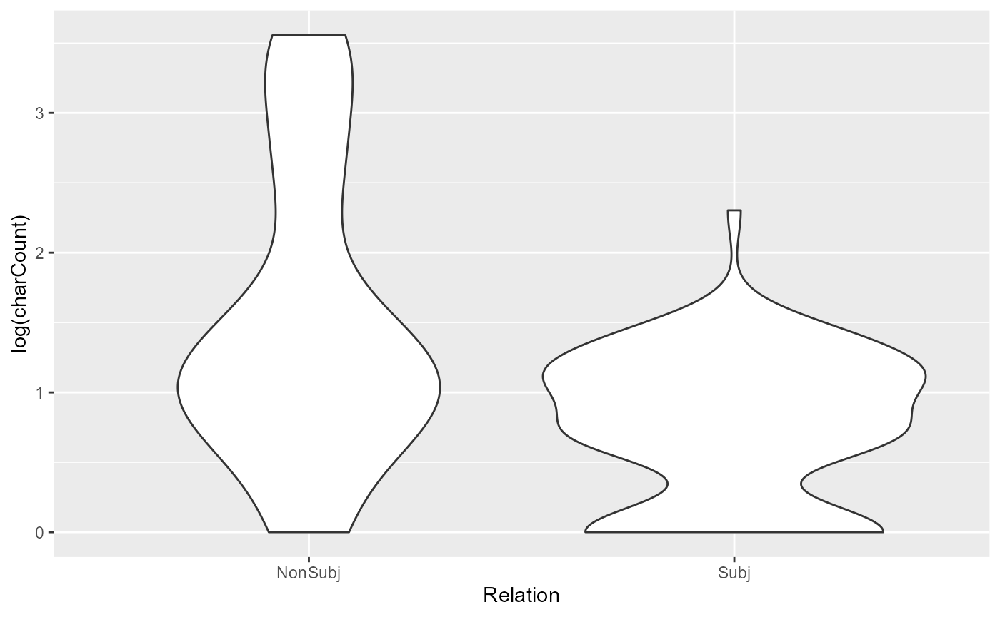

Sample mini-project: Analysing coreference in rezonateR
sample_proj.RmdIntroduction to the tutorial
This tutorial is a sample project in rezonateR aiming to
predict the length of referential expressions in natural discourse based
on several discourse and grammatical factors. rezonateR is
an R package mainly designed to import, organise and analyse data
produced by the annotation and discourse visualisation software Rezonator, Rezonator, developed at the
University of California, Santa Barbara led by John W Du Bois, handles a
variety of linguistic annotations, including span annotations,
coreference chains, dependency trees, and more, with a focus on spoken
discourse. The package rezonateR, created by the author
(Ryan Ka Yau Lai), aims to simplify the process of working with
Rezonator data using a wealth of built-in functions for data wrangling,
feature engineering, and combining Rezonator data with other sources of
annotations.
This tutorial will cover some of the most important functions, including:
Importing a .rez file (the Rezonator data format) and reading annotations imported
Defining whether a token counts as a word
Deriving measures predictive of the choice of referential form (which may also be useful for a variety of other applications like coreference resolution)
Connecting information from dependency trees to information about coreference chains
Merging chunks (Rezonator’s implementation of span annotations)
Doing automatic annotations within
rezonateR, then exporting the results to a spreadsheet and importing it back into R
This simple project shows most of the basic capabilities of
rezonateR. The longer series of tutorials starting from an
introduction to imports,
saving and data structure
(vignette("import_save_basics")) is based on the same
dataset as this page, but covers most functionality of the package down
to the smallest details, and you can pick and choose topics from there
to read. If you are already familiar with using Rezonator, you may want
to consult the overview
for Rezonator users (vignette("overview")), a less
topically focused overview that tells you how rezonateR can
support your Rezonator work, covering more topics about different
aspects of rezonateR than this page.
This article does not assume that you have read any of these other
articles, so there is some overlap in the topics covered. However, this
article will have less focus on how to write the code, and more on
showing you how to answer the sample research question using
rezonateR. So don’t worry if you don’t understand the
details of how the code works - that can come later, as you read the
detailed tutorials and documentation. I will point you to other
tutorials for further details when relevant.
Research question: Referent accessibility and referential choice
In this tutorial, we will be using Rezonator and
rezonateR to address a research question using a simple
sample data set: We will look at the relationship between the
accessibility of a referent, i.e. the ease of cognitively ‘getting at’ a
referent, and the choice of a linguistic expression used to refer to
that form. Before elaborating on our research question, we will first
introduce basic assumptions about the research topic.
In language, we often refer to different entities and concepts in the world: The people around us, the places we pass through, the things we see and remember. These things are called referents, and when we use linguistic expressions to refer to them, those linguistic elements are called referential expressions.
In the following example, we see a short snippet of conversation between two sisters from the text A Tree’s Life, a conversation between two sisters from the Santa Barbara Corpus of Spoken American English (Du Bois et al. 2000). Just in this short passage, we can see different referential expressions:
Figure 1: A short excerpt of a conversation with several referential expressions
There are several examples of referential expressions in Figure 1. For example, in the first line in the screenshot (line 361), Mary refers to a cattle guard with the phrase the first cattle guard you go over. She refers back to it in line 363 using the expression that. In the same line 363, she also uses the expression I to refer to herself. Alice’s reply mentions a new referent, the tunnel (366). All of these phrases refer to people or entities in the world.
In the above example, the same referent (the cattle guard) was referred to using two distinct expressions: a noun phrase with a relative clause that first cattle guard you go over (line 361) and a demonstrative pronoun that (line 363). When people do this, we say that they are tracking referents across different parts of the discourse. The relationship between two referential expressions with the same referent in a text is called coreference. Each referential expression may be referred to as a mention of a certain referent.
In the following image (Figure 2), we have marked up the two expressions referring to the cattle guard with green rectangles, and drawn a line between them, showing the coreference relation. The resulting structure, with lines linking up different referential expressions, is often referred to as a coreference chain:

Figure 2: Coreference chain containing two mentions of the first cattle guard
We do the same thing with the two appearances of the referential expression the tunnel in lines 366-367, since they refer to the same tunnel. This time, the referential expressions are enclosed by blue rectangles, and linked with a blue line to show the coreference relation:
Figure 3: Coreference chain containing two mentions of the tunnel
The next figure shows how the whole excerpt we have shown at the beginning would look like with all the coreference chains marked (including the first, truncated referential expression the in line 365):

Figure 4: A version of Figure 1 with all the referential expressions marked.
Up to now, we have seen that referential expressions come in many shapes and sizes: They can be heavily modified noun phrases like that first cattle guard you go over, or short one-word expressions like that. An important question is how humans make use of these different linguistic resources to refer to people and entities in the world.
It is often noted that in language, if a referent is more ‘accessible’, or more easily accessed mentally - for example, it is salient in the previous discourse or physical context - then we will tend to refer to it using a shorter and simpler form. Referents that are less accessible - for example, things that are mentioned for the first time - tend to be referred to using longer forms (e.g. Ariel 2001). In our first example, when the cattle guard was first mentioned, it was newly introduced to the discourse, and we see that Mary wasn’t even sure that Alice remembers about it. It was thus not accessible. This likely motivated the use of a long referential expression, to help Mary retrieve the correct referent. But after Mary affirmed that she understood, it became a salient entity in the minds of both conversational partners, and when Mary refers to the cattle guard again, she switches to the shorter form that.
Thus, we should expect that in natural discourse, factors that render a referent more accessible are associated with shorter forms, and factors that make it less accessible are associated with longer forms. Figure 3 shows an example of this phenomenon where an entity is first mentioned as a full noun phrase, and by the end of the stretch of text is only mentioned by a pronoun. The coreference chain this time is in pink, with successive mentions linked by pink lines, like the other coreference chains we have seen before:
Figure 5: Coreference chain for three mentions of hard times
When the concept of hard times was first mentioned, it was with a noun phrase hard times (line 159), and the same occurred again in the next line. But the third time it appeared, a pronoun it was used. Intuitively, hard times was quite prominent and therefore accessible by the third reference, and hence a shorter form was used.
Note that the word they in lines 158 and 159, although having the same form as they in line 162, is not linked, since these expressions are referring to a group of people, and not hard times. (To be exact, they are Alice’s roommates.) We can draw a separate coreference chain for they, shown here in red instead of purple:
Figure 6: A separate chain for the two instances of they with a different referent
In Figure 6, the fact that the roommates were referred to by the short and simple one-word expression they probably suggests that they were quite prominent in context. Indeed, in the context preceding these two lines, they have been mentioned numerous times, and were the main topic of discussion.
So far, we have talked about notions like accessibility and prominence in rather vague and general terms. But what exactly makes something more accessible, and therefore more likely to be referred to using a shorter form? To understand how exactly people choose referential expressions in natural discourse, we need to turn factors affecting accessibility into a more concrete, readily operationalisable form.
In this project, we will propose some factors that may increase accessibility (e.g. the number of times an entity has been recently mentioned), and then determine whether they are associated with the use of a shorter form in natural discourse. For example, if certain referents have just been mentioned a lot in the previous context, we might expect that they are relatively mentally accessible. If such referents are statistically more likely to be referred to using shorter, simpler forms - like the example of they that we have just discussed - then we have support for the idea that people choose to use shorter, simpler forms when referents are more accessible in discourse. This project is a preliminary investigation of this issue using a short snippet of conversation.
This tutorial in a nutshell
The aim of this article is to demonstrate, using a sample, highly
simplified project, what type of analysis may be conducted using
Rezonator and rezonateR. This particular example will
examine the choice of referential forms in spoken dialogue: What factors
lead to the choice of a longer form versus a shorter one? The following
snippet of conversation (Figure 7), for example, has two referential
expressions referring to the same entity - a dog - but the first one is
a rather long noun phrase (this darn dog) while the second is a
simple, one-word pronoun (her). Can we tell what factors are at
play here that motivated the speaker’s choice of referential
expression?
Figure 7: Coreference chain containing two mentions of a dog
To this end, we will annotate each referential expression in the text
using properties that we believe are related to accessibility, such as
the number of times the referent has been mentioned recently, or whether
the expression is the subject of a clause. We will then use this
information and attempt to see whether some of these properties are
associated with the use of shorter, simpler referential expressions and
others with longer, more complex expressions. The only prerequisite of
this tutorial is that you have installed rezonateR. If you
have not, please do it now using this code:
| Installing rezonateR |
|---|
|
You are welcome to follow this tutorial in R. If you are reading this
in R using the file sample_proj.Rmd, you can simply click
on the ‘run’ button (green ‘play’ icon on the top right of each box) to
run the code. As long as all the code blocks are run sequentially, the
code should work; otherwise, please submit a
ticket on GitHub!
Overview of our goal in rezonateR
As we said above, our goal is to propose several factors that are
potentially relevant to accessibility of referents in discourse, and see
if they are associated with simpler referential forms. For the purposes
of this tutorial, we will use orthographic length, or how many English
letters there are in an expression, as a proxy for how ‘simple’ the
referential forms will be, since this is the easiest to calculate. This
acts as a proxy for phonological size, which is often claimed to be
associated with accessibility: the more accessible an entity, the
smaller the phonological size of the referential expression used (Ariel
2001). The orthographic length variable will be referred to as
charCount in the code.
We will be building a model that predicts the charCount
from several predictors in our small dataset, which include properties
of the expression itself as well as its relation to the wider
grammatical and discourse context. Here is a spoiler of the final set of
factors, which we will explain in more detail as we go through the
tutorial:
-
noPrevSubjMentionsIn10: The number of coreferent subject mentions within the 10 previous intonation units. That is, how many times was the referent of a form mentioned in the 10 previous intonation units in subject position? -
noPrevNonSubjMentionsIn10: The number of coreferent non-subject mentions within the 10 previous intonation units. That is, how many times was the referent of a form mentioned in the 10 previous intonation units, outside of subject position? -
gapUnits: How many intonation units are there between the previous mention and the current one? -
noCompetitors: The number of competitors within the ten previous intonation units. That is, how many times were entities other than the referent of the current referential expression mentioned within the ten previous intonation units? -
seqInTrail: The position of a mention in its coreference chain. That is, is it the first mention of something, or the second, third, etc.? -
Relation: Is the current referential expression a subject? -
isPredOrFree: Is the current mention either a nominal predicate (copula complement) or not tied to a particular clause? -
number: Is the current referential expression singular or plural?
Thus, our goal within R is to create a data frame where each row
corresponds to a referential expression, and the columns include all of
these factors (plus charCount, the number of characters).
This can be done easily using the rezonateR functions after
inputting the raw Rezonator data.
The analysis we will make here is not the optimal one for the dataset, but mainly serves as a way of showcase the functionalities on offer. Thus, the dataset is very small and modelling choices will be kept simple, compared to what one would do in an actual project.
The input data from Rezonator
The first 162 lines have been annotated and will be used in this
tutorial; they deal with the topic of one of the sisters’ roommates. The
data is also available through the sbc007 object in the
package itself, where a detailed description of the annotations included
may be found. The full corpus, with text and audio files, can be
downloaded at the Santa
Barbara Corpus page on the UC Santa Barbara Linguistics Department
Website. The corpus in .rez format, the file format
which is used by the Rezonator program and can be imported into R using
rezonateR, is shipped with Rezonator, which can be
downloaded on the Rezonator
website.
In this section, we will explore the basic structure of a Rezonator file using this text. More advanced data structures will be introduced later in the tutorial as the need arises.
Units and tokens
Figure 8 shows an excerpt close to the beginning of the conversation in Rezonator:

Figure 8: Units and tokens.
In this file, each line is referred to as a unit, which in this context is an intonation unit, or a short burst of speech under a single intonation contour. In other research projects where we are working with other basic units such as the sentence, clause or other structure of similar length, we can set the Rezonator unit to those structures instead.
Each unit consists of a series of tokens separated by spaces. In this file, most of the tokens are English words, like usually, I and do in line 7 of the screenshot in Figure 8. Also considered tokens are contractions like ’nt for not on lines 7 and 9 or ’s for is on lines 10 and 12, which are considered separate tokens in this project even though they are not separated by whitespace from the previous token in English writing conventions.
However, there are also other elements that are considered tokens. For example, the symbol at the end of each line in the screenshot is called an endnote in the context of discourse-functional transcription (DFT), the transcription conventions used in the Santa Barbara Corpus. It denotes the intonational contour type of the intonation unit. In the line 7, the dash indicates that the intonation unit was truncated. In line 8, the period represents final (falling) intonation, whereas in line 10, the comma represents continuing intonation, which is associated with a relatively stable pitch near the end. Line 11 ends with a question mark indicating question intonation, which is associated with rising pitch near the end.
There are also other tokens that are not words, such as
(...) in line 10, denoting a relatively long pause, or
@ in line 12, denoting a pulse of laughter. These
transcription symbols are all considered tokens in this file, and
together with actual words like usually, they are arranged into
intonation units in Santa Barbara corpus transcriptions.
Tracks and trails
Coreference chains have been annotated in this file. In the Rezonator context, coreference chains are also known as trails. A trail consists of several mentions or referential expressions that refer to the same entity. Each of these individual referential expressions is called a track, and they are connected by wavy lines in Rezonator. We saw some examples of trails at the beginning of this tutorial. Here is another example:

Figure 9: Coreference chain for the referent Tim
In Figure 9, the proper name Tim and three instances of the pronoun he all refer to the same person, Tim, and hence are four tracks of the same purple trail.
Zeroes
When there is a clause with an implicit participant that is not
overtly expressed in the linguistic form, this is often referred to as a
zero. In this file, a zero is annotated whenever there is a
participant that is implied by the verb, but not overtly expressed in
the linguistic content. In the annotated .rez file we are
working with, the symbol <0> is used to indicate such a zero.
Zeroes are added to the same trail as referential expressions referring
to the same entity. Here is an example where explicit referential
expressions are placed in the same purple trail as a zero:

Figure 10: Coreference chain for the referent Mary, including two first-person pronouns and a zero
Notice that the two occurrences of I on Line 2 in Figure 10 are linked together with a purple link. In the third line, the person who is implied to be staying up late is Mary herself, even though there is no explicit mention. Thus, a zero was inserted before stay, and added to the same trail as the two occurrences of I.
In Figure 10, the zero in line 4 does not refer back to I, but to the action of staying up late. Thus, it is not in the same chain, as indicated by the lack of a purple border around it (even though the fact that the purple line runs through the <0> might lead one to mistakenly believe that it belongs to the same chain). In fact, as shown in Figure 11, the <0> on line 4 belongs to the same chain as this on line 2 and stay up late on line 3, both of which refer to the action of staying up late:

Figure 11: Coreference chain for the action of staying up late, including a demonstrative pronoun, the phrase stay up late, and a zero
Chunks
A ‘chunk’ in a Rezonator is a sequence of tokens within a unit, often a type of phrase such as a noun phrase. In Rezonator, chunks are elements represented by rectangular outlines around one or more tokens.
There are two types of chunks. Some chunks correspond to tracks. For example, stay up late in the example we have just seen is a chunk. These chunks have rectangular borders of the same colour as the rest of the trail that they belong to:
Figure 12: Coreference chain for the action of staying up late
In the file we are working with, chunks corresponding to tracks are mostly referential expressions like pronouns and noun phrases. As is visible in Figure 12, we include predicates and clauses when there are referential expressions that co-refer with them; for example, this and stay up late both refer to the action of staying up late here.
The second type of chunks is called ‘blank chunks’. These chunks do not belong to any trail and appear with grey rectangular borders with angled corners around them. In this file, verbal complexes are marked as blank chunks. The following figure shows some examples of these verbal chunks:

Figure 13: Some examples of ‘blank chunks’, indicating verbal complexes
In this example (Figure 13), auxiliaries, negation and similar elements expressing verbal categories are placed inside these verbal complexes, such as wasn’t gonna in wasn’t gonna do.
Chunks have been tagged for two properties inside Rezonator. The
field chunkType is annotated as verb for verbs
and left blank for referential expressions, allowing us to distinguish
between the two when importing into rezonateR later. The
field largerChunk is the larger chunk to which a chunk
belongs, which will be discussed later. These two columns are shown in
the navigation pane of Rezonator as follows:

Figure 14: The navigation pane showing two chunk
properties, chunkType and largerChunk
In Figure 14, said and wasn’t gonna do are verbal
complexes and hence tagged as verb under
chunkType, the first column on the right side of Figure 15
(without grey shading). The other expressions have blank values,
indicating that they are referential expressions. The second column on
the right side, largerChunk, is annotated for chunks 67 and
68 as ‘2’, indicating that they are part of the same larger chunk that
will be merged in rezonateR, as we will soon see.
Importing the file
The first step is to import the file. When importing a file, an
object called rezrObj is created. rezrObj
contains two kinds of elements:
- A
nodeMap, which contains the data in the form of a series of interconnected nodes with attributes. For example, each token in a Rezonator file is represented by a node in the node map, which contains information such as the text of the token itself, its position inside the document, and so on. - A series of
rezrDFs, which are data frames containing information about different elements of the file, such as tokens, units, trails and so on. Each row is one instance of that entity (token, unit, etc.) whereas each column gives an attribute of that entity.
In this tutorial, we will only work with rezrDFs. Some
important rezrDFs include:
tokenDF, which contains the information about individual tokens of the original fileunitDF, which contains information about individual unitschunkDF, which contains information about chunkstrailDF, which contains information about trails (i.e. coreference chains).trackDF, which contains information about entries of trails (i.e. mentions in coreference chains).
During the import process, we will need to specify two types of information:
-
How to divide the chunks into layers: Recall that there are two types of chunks in this file: referential expressions and verbs. We would like to keep this information in separate data frames so that we can easily access all chunks of each type in the same place, without being distracted by the other chunk type. So, we divide the chunks into two layers,
verbandrefexpr(for ‘referential expressions’, including the entire clauses we’ve seen before). Chunks in the two layers will be put into two separaterezrDFs.In some situations, it is useful to specify layers for other elements like tracks, trails and trees as well. In this tutorial, however, we only have one type of each of these elements. Since no layers are specified for
trackDFandtreeDF, there will be only onerezrDFfor them, with the layer namedefault. The same applies to data frames associated with tracks and trees, includingtrailDFandtreeEntryDF: They will all have a single layer nameddefault, since there are no layers specified for them. -
Which fields of a token contains text to be concatenated: When you are browsing data frames containing data structures above the level of a token, such as
chunkDForunitDF, you want to be able to see the text. For example, take the following line:
Figure 15: A unit containing the chunk *’m also going to suggest*
When browsing the
unitDF, you would want to see all the text in this unit, (…) (H) I ’m also going to suggest ,, in one of the columns. Similarly, when browsingchunkDF, you would want a column that gives you ’m also going to suggest. Thus, we have to tell Rezonator where to look for the textual content of individual tokens so that they can be concatenated in therezrDFs for higher structures like chunks and units.
Here is the full import code. The field layerRegex
provides information about layers, and concatFields
contains information about text concatenation.
library(rezonateR)
#> Loading required package: readr
#> Loading required package: stringr
#> Loading required package: rlang
path = system.file("extdata", "sbc007.rez", package = "rezonateR", mustWork = T)
layerRegex = list(chunk = list(field = "chunkType",
regex = c("verb"),
names = c("verb", "refexpr")))
concatFields = c("text", "transcript")
rez007 = importRez(path,
layerRegex = layerRegex,
concatFields = concatFields)
#> Import starting - please be patient ...
#> Creating node maps ...
#> Creating rezrDFs ...
#> Adding foreign fields to rezrDFs and sorting (this is the slowest step) ...
#> >Adding to unit entry DF ...
#> >Adding to unit DF ...
#> >Adding to chunk DF ...
#> >Adding to track DFs ...
#> >Adding to track DFs ...
#> >Adding to tree DFs ...
#> Splitting rezrDFs into layers ...
#> A few finishing touches ...
#> Done!As examples of the content inside the imported object, here are the
imported chunkDF members and trackDF. Notice
that the chunkDF is divided into two (refexpr
and verb):
head(rez007$chunkDF %>% lapply(select, id, doc, text))
#> $refexpr
#> # A tibble: 76 × 3
#> id doc text
#> <chr> <chr> <chr>
#> 1 35E3E0AB6803A sbc007 Stay up late
#> 2 1F6B5F0B3FF59 sbc007 the purpose of getting up in the morning
#> 3 24FE2B219BD21 sbc007 getting up in the morning
#> 4 158B579C1BA49 sbc007 the morning
#> 5 2F857247FD9D5 sbc007 a hard habit to break
#> 6 2B6521E881365 sbc007 all this other shit
#> 7 5B854594DD34 sbc007 the way (...) they were feeling
#> 8 189552EBB1B7A sbc007 the only ones cleaning the house
#> 9 313D141E6D8AA sbc007 the house
#> 10 1E970FF5D93B4 sbc007 all this other shit
#> # … with 66 more rows
#> # ℹ Use `print(n = ...)` to see more rows
#>
#> $verb
#> # A tibble: 126 × 3
#> id doc text
#> <chr> <chr> <chr>
#> 1 210FB26A315A sbc007 said
#> 2 744AD104FE64 sbc007 was n't gon na do
#> 3 1A14BB68EDAC9 sbc007 defeats
#> 4 2CCD5F5A950BE sbc007 know
#> 5 1F1135429F347 sbc007 's
#> 6 30F18BABDB83C sbc007 do n't
#> 7 94188DEA38BB sbc007 is
#> 8 13A37EC5064A2 sbc007 do n't stay
#> 9 5A4983D707E8 sbc007 's
#> 10 29C877785FC4B sbc007 'm
#> # … with 116 more rows
#> # ℹ Use `print(n = ...)` to see more rows
head(rez007$trackDF$default %>% select(id, doc, chain, token, text, gapWords, charCount))
#> # A tibble: 6 × 7
#> id doc chain token text gapWords charC…¹
#> <chr> <chr> <chr> <chr> <chr> <chr> <dbl>
#> 1 1096E4AFFFE65 sbc007 278D0D84814BC 37EFCBECFD691 I N/A 1
#> 2 92F20ACA5F06 sbc007 278D0D84814BC 936363B71D59 I 2 1
#> 3 1F74D2B049FA4 sbc007 2A01379C5D049 126598FC7249C this N/A 4
#> 4 2485C4F740FC0 sbc007 278D0D84814BC 21133B0FAAF04 <0> 10 3
#> 5 1BF2260B4AB78 sbc007 2A01379C5D049 35E3E0AB6803A Stay up late 5 12
#> 6 6B37B5A80F2A sbc007 2A01379C5D049 233E8BD5D62BB <0> 5 3
#> # … with abbreviated variable name ¹charCountMore information about the import process, including how to specify
the two pieces of information for import and the various objects created
by the import process, can be found in the detailed
tutorial on imports and data structure
(vignette("import_save_basics")).
Each line of the table rez007$trackDF$default above
contains a referential expression whose size we want to predict. The
goal of using rezonateR for this project will be to produce
a version of the data frame rez007$trackDF that contains
all the predictors and the dependent variable on each line, and may be
fed to models such as lm().
You can save the rezrObj with rez_save() so
that it can be opened with rez_load() next time, saving you
the trouble of importing again:
savePath = "rez007.Rdata"
rez_save(rez007, savePath)
#> Saving rezrObj ...Sequence and order of entities in discourse
After importing the file, there are a few simple operations that we usually call to add additional information to the table which was not added during the original import process, before beginning the process of editing. In this section, we will perform two actions that relate to the sequence and order of entities in discourse. We will first defining which tokens are ‘words’ and add corresponding sequence information, and adding unit sequence information to non-unit tables.
Words vs tokens
By default Rezonator provides two fields related to the position of a
token, which you will see in tokenDF as columns:
-
docTokenSeq- refers to the position of a token within the entire text -
tokenOrder- refers to the position of a token within its unit (in this file, this refers to intonation units)
Structures that span multiple tokens, like chunks and units, have four token sequence-related fields:
-
docTokenSeqFirst- refers to thedocTokenSeqof the first token. That is, what is the position of the first token of the chunk, unit, etc. within the text? -
docTokenSeqLast- refers to thedocTokenSeqof the last token. That is, what is the position of the last token of the chunk, unit, etc. within the text? -
tokenOrderFirst- refers to thetokenOrderof the first token. That is, what is the position of the first token of the chunk, unit, etc. within the unit? -
tokenOrderLast- refers to thetokenOrderof the last token. That is, what is the position of the first token of the chunk, unit, etc. within the unit?
Here are some examples:
head(rez007$tokenDF %>% select(id, text, tokenOrder, docTokenSeq))
#> # A tibble: 6 × 4
#> id text tokenOrder docTokenSeq
#> <chr> <chr> <dbl> <dbl>
#> 1 31F282855E95E (...) 1 1
#> 2 363C1D373B2F7 God 2 2
#> 3 3628E4BD4CC05 , 3 3
#> 4 37EFCBECFD691 I 1 4
#> 5 12D67756890C1 said 2 5
#> 6 936363B71D59 I 3 6
head(rez007$chunkDF$refexpr %>% select(id, text, tokenOrderFirst, tokenOrderLast, docTokenSeqFirst, docTokenSeqLast))
#> # A tibble: 6 × 6
#> id text token…¹ token…² docTo…³ docTo…⁴
#> <chr> <chr> <dbl> <dbl> <dbl> <dbl>
#> 1 35E3E0AB6803A Stay up late 3 5 17 19
#> 2 1F6B5F0B3FF59 the purpose of getting up in th… 5 12 25 32
#> 3 24FE2B219BD21 getting up in the morning 8 12 28 32
#> 4 158B579C1BA49 the morning 11 12 31 32
#> 5 2F857247FD9D5 a hard habit to break 5 9 42 46
#> 6 2B6521E881365 all this other shit 2 5 144 147
#> # … with abbreviated variable names ¹tokenOrderFirst, ²tokenOrderLast,
#> # ³docTokenSeqFirst, ⁴docTokenSeqLastThese values count all tokens in the file, including non-word tokens. In the Santa Barbara Corpus text we are using, there are various types of non-word tokens that these values will count. For example, in the following screenshot:
Figure 16: Units and tokens.
Values like doctokenSeq include in their counting
various tokens that are not exactly words. This includes endnotes (such
as , and .), which, as we discussed before,
denote the intonational contours of IUs. Also included are pauses like
(...), vocalisms - sounds we make during speech
that are often considered paralinguistic such as (H) for
in-breaths and @@@ for laughter - and so on.
What if we want a version of fields like tokenOrder and
docTokenSeq that excludes these non-word tokens, including
just ‘real’ words like stay (line 9) and midnight
(line 11)? To do this, we have to first tell Rezonator how to define
what a ‘word’ is. We can use the function addIsWordField()
to do this:
rez007 = addIsWordField(rez007, kind == "Word")This function adds a a column to the tokenDF that states
whether a token is a word, and in addition, it adds the fields
wordOrder and docWordSeq to
tokenDF (and also its counterparts in places like
chunkDF and unitDF,
e.g. wordOrderFirst, wordOrderLast,
docWordSeqFirst, docWordSeqLast). These are
counterparts of the token-related fields we have seen
above, except that these new fields discount non-real words, which get
the value 0. Here’s an example in tokenDF:
head(rez007$tokenDF %>% select(id, text, tokenOrder, docTokenSeq, wordOrder, docWordSeq))
#> # A tibble: 6 × 6
#> id text tokenOrder docTokenSeq wordOrder docWordSeq
#> <chr> <chr> <dbl> <dbl> <dbl> <dbl>
#> 1 31F282855E95E (...) 1 1 0 0
#> 2 363C1D373B2F7 God 2 2 1 1
#> 3 3628E4BD4CC05 , 3 3 0 0
#> 4 37EFCBECFD691 I 1 4 1 2
#> 5 12D67756890C1 said 2 5 2 3
#> 6 936363B71D59 I 3 6 3 4Unit sequence information
When browsing rezrDFs, it is helpful to find out what
unit the element we are looking at belongs to (or units, if it spans
multiple units). However, this information is not added to
rezrDFs like trackDF or chunkDF
by default. The function addUnitSeq() does this. Here,
unitSeqFirst and unitSeqLast are added to
chunkDF and trackDF, allowing us to see which
units chunks and tracks belong to:
rez007 = addUnitSeq(rez007, "track")
head(rez007$chunkDF$refexpr %>% select(id, text, unitSeqFirst, unitSeqLast))
#> # A tibble: 6 × 4
#> id text unitSeqFirst unitSeqL…¹
#> <chr> <chr> <dbl> <dbl>
#> 1 35E3E0AB6803A Stay up late 3 3
#> 2 1F6B5F0B3FF59 the purpose of getting up in the morning 4 4
#> 3 24FE2B219BD21 getting up in the morning 4 4
#> 4 158B579C1BA49 the morning 4 4
#> 5 2F857247FD9D5 a hard habit to break 6 6
#> 6 2B6521E881365 all this other shit 24 24
#> # … with abbreviated variable name ¹unitSeqLastFor the details of these functions, see the
tutorial on time and sequence
(vignette("time_seq")).
Pass 1: Predicting orthographic length of referential expressions from lookback distance
After the initial process of importing and simple preprocessing, we are now ready to explore the data and test our research hypotheses.
Recall that we would like to explore how factors related to the
accessibility of referents affects the length of the referential
expression chosen. One common way of operationalising accessibility is
lookback distance: When the referential expression was
produced, how long has it been since the previous mention? In this
section, we will use some default predictors created automatically by
Rezonator: gapUnits and gapWords.
gapUnits: Lookback distance in R
As you might have noticed when using Rezonator, Rezonator
automatically calculates the distance (in terms of intonation units)
from each track (mention) to the previous mention in the same trail
(coreference chain). This variable is called gapUnits, and
it is automatically imported from Rezonator into rezonateR
in trackDF. The gapUnits value is
N/A for first mentions of referents; otherwise it is a
nonnegative integer.
As an example, let’s look the trail for staying up late at the beginning of the conversation again:

Figure 17: A trail containing four mentions of the action of staying up late, spanning units 2-6.
If we consider the zero on line 4, gapUnits is just 1,
since the previous mention was right in the previous unit. The
it in the last line, line 6, should have a
gapUnits value of 2, since the previous mention was on line
4, which is two units away.
Because first mentions are usually not accessible in discourse when
they are first introduced, we can expect that they would be referred to
using longer noun phrases. Let’s try to verify that this is the case.
The following piece of code plots the length of first vs. non-first
mentions in the text using a violin plot. The y-axis shows the number of
characters inside each referential expression (charCount),
and there are two violins: One for first mentions and one for non-first
mentions. (Note that in this tutorial, the plot will be displayed
immediately after the code producing it. Moreover, this tutorial will
use some tidyverse functions, such as those from
ggplot2; feel free to click on any functions that you do
not recognise to see their documentation.)
library(ggplot2)
#>
#> Attaching package: 'ggplot2'
#> The following object is masked from 'package:rezonateR':
#>
#> %+%
rez007$trackDF$default %>%
mutate(isFirst = case_when(gapUnits == "N/A" ~ "First",
T ~ "NonFirst")) %>%
ggplot(aes(x = isFirst, y = log(charCount))) + geom_violin()Clearly, we can see that first mentions have a much higher tendency to be referred to using a noun phrase that has more characters. In fact, non-first mentions are highly concentrated at the bottom of the graph with the shortest referential expressions, whereas first mentions are well spread out across the range of lengths.
Among the non-first mentions, can we also predict the character count
from gapUnits? Let’s again do a quick visualisation,
excluding first mentions. In the following plot, the the y-axis is gives
the character count, the x-axis the gapUnits, and the size
of the dots in the graph indicates the number of referential expressions
with that combination of charCount and
gapUnits:
rez007$trackDF$default %>%
filter(gapUnits != "N/A", charCount > 0) %>%
mutate(gapUnits = as.integer(gapUnits)) %>%
ggplot(aes(x = gapUnits, y = charCount)) + geom_count()
Oh no, what’s going on? It seems that gapUnits is not
predicting what we would usually expect to see. Most of the
long-gapUnits noun phrases are fairly light, and there are
quite a few small-gapUnits phrases that are quite long.
This seems to go against the usual expectation that a shorter lookback
distance leads to higher accessibility and should be associated with
shorter referential forms.
The bottom left of the above diagram was a little messy; we can log the character count to get a better view:
rez007$trackDF$default %>%
filter(gapUnits != "N/A", charCount > 0) %>%
mutate(gapUnits = as.integer(gapUnits)) %>%
ggplot(aes(x = gapUnits, y = log(charCount))) + geom_count()
There is still a slight visible pattern whereby longer gapUnits tends to be associated with shorter character counts, contrary to expectation.
In the rest of the tutorial, we will partially account for this
weirdness (though some of it is certainly due to our small, biased
dataset). But for now, let’s try to apply a simple linear model to this
data to see what happens when we try to predict the logged
charCount from gapUnits. (Note: This is not
the best model specification for the data we’re looking at, but let’s
keep it simple for this tutorial.)
pass1_model1 = rez007$trackDF$default %>%
filter(gapUnits != "N/A", charCount > 0) %>%
mutate(gapUnits = as.integer(gapUnits)) %>%
lm(log(charCount) ~ gapUnits, .)
summary(pass1_model1)
#>
#> Call:
#> lm(formula = log(charCount) ~ gapUnits, data = .)
#>
#> Residuals:
#> Min 1Q Median 3Q Max
#> -1.2557 -0.5473 -0.1419 0.1648 2.6715
#>
#> Coefficients:
#> Estimate Std. Error t value Pr(>|t|)
#> (Intercept) 1.255666 0.088784 14.14 <2e-16 ***
#> gapUnits -0.015183 0.009549 -1.59 0.114
#> ---
#> Signif. codes: 0 '***' 0.001 '**' 0.01 '*' 0.05 '.' 0.1 ' ' 1
#>
#> Residual standard error: 0.9945 on 162 degrees of freedom
#> Multiple R-squared: 0.01537, Adjusted R-squared: 0.009288
#> F-statistic: 2.528 on 1 and 162 DF, p-value: 0.1138As we can see, although there is a negative coefficient that says a
larger gapUnits leads to a smaller character count (as
expected from our graph - though contrary to our usual expectations), it
is not significant.
A finer-grained distance metric?
There is another value, gapWords, that is automatically
calculated in Rezonator and calculates the number of tokens from the
current mention to the previous one. Would this finer-grained measure be
a better operationalisation of lookback distance than
gapUnits? Let’s try to make the same plot that we just did
with logged charCount, except with gapWords
instead of gapUnits on the x-axis:
rez007$trackDF$default %>%
filter(gapWords != "N/A", charCount > 0) %>%
mutate(gapWords = as.integer(gapWords)) %>%
ggplot(aes(x = gapWords, y = log(charCount))) + geom_count()
The pattern is not much clearer from the diagram this time than last
time. We still don’t see our expected effect: A shorter lookback
distance should be associated with shorter referential expressions.
Let’s try to put gapWords again into the linear regression
model:
pass1_model2 = rez007$trackDF$default %>%
filter(gapWords != "N/A", charCount > 0) %>%
mutate(gapWords = as.integer(gapWords)) %>%
lm(log(charCount) ~ gapWords, .)
summary(pass1_model2)
#>
#> Call:
#> lm(formula = log(charCount) ~ gapWords, data = .)
#>
#> Residuals:
#> Min 1Q Median 3Q Max
#> -1.2475 -0.5457 -0.1385 0.1687 2.6668
#>
#> Coefficients:
#> Estimate Std. Error t value Pr(>|t|)
#> (Intercept) 1.252092 0.089134 14.047 <2e-16 ***
#> gapWords -0.002299 0.001546 -1.487 0.139
#> ---
#> Signif. codes: 0 '***' 0.001 '**' 0.01 '*' 0.05 '.' 0.1 ' ' 1
#>
#> Residual standard error: 0.9955 on 162 degrees of freedom
#> Multiple R-squared: 0.01346, Adjusted R-squared: 0.007371
#> F-statistic: 2.21 on 1 and 162 DF, p-value: 0.139As we can see, there is little change with the linear model either:
The negative coefficient indicates that a shorter gapWords
is associated with longer referential expressions, contrary to usual
expectations, although the relationship is not significant, with a
p-value around 0.14.
There are ways we can potentially improve on these measures as well as other predictors of character count that we can potentially explore. We’ll continue doing this throughout the tutorial.
Pass 2: Adding predictors of referential expression length with EasyTrack
Having attempted to predict character count from predictors imported
directly from Rezonator, let’s try to derive some predictors using
rezonateR functions too. This section will cover some basic
functions in the EasyTrack series of functions, which is
dedicated to analysing coreference phenomena. See the tutorial
on coreference (vignette("track")) for details about
them.
In particular, we will try to count the number of previous
mentions instead of the distance to the previous mention, and also try
to count the number of mentions to different entities in the
surrounding context. We will also try to improve on
gapWords to see if modifying its operationalisation a
little will be more revealing of the effect of lookback distance.
Counting previous mentions
Apart from the number of intonation units to the previous instance that an entity was mentioned, the number of previous mentions within a specified time window may also affect accessibility: An entity that was just mentioned in the previous intonation unit but never before that might conceivably be less accessible than one that was just mentioned in the previous intonation unit as well as several intonation units before that.
The function countPrevMentions() in
rezonateR is one function we can use to count the number of
times the referent of a referential expression was referred to in its
previous context. In its simplest form, you can simply specify a window
of units in which to look for referential expressions that corefer with
the each mention.
In this example, we will look at a window of 10 previous units. Refer to the following example:

Figure 18: A trail containing five mentions of the action of staying up late, spanning units 2-8.
If we consider the it on the last line (line 8), among the previous 10 units (actually seven, since there are only seven preceding units), there have been four mentions of the action of staying up late, so the value we expect to get from this function is 4. If we had set the window to five units instead, the value would be only 3, since the first mention on line 2, this, is not within the five-unit window.
We will add the previous mention count to the trackDF
using the rez_mutate() function, which is part of the TidyRez
family (vignette("edit_tidyRez")). (We use this
function rather than dplyr::mutate() in order to ensure
that the resulting data frame will remain in the correct
rezonateR format.) Here is the code, along with a line of
code that displays the first couple of values of this predictor:
rez007$trackDF$default = rez007$trackDF$default %>%
rez_mutate(noPrevMentionsIn10 = countPrevMentions(10))
rez007$trackDF$default %>% select(id, text, noPrevMentionsIn10) %>% slice(1:20)
#> # A tibble: 20 × 3
#> id text noPrevMentionsIn10
#> <chr> <chr> <int>
#> 1 1096E4AFFFE65 I 0
#> 2 92F20ACA5F06 I 0
#> 3 1F74D2B049FA4 this 0
#> 4 2485C4F740FC0 <0> 2
#> 5 1BF2260B4AB78 Stay up late 1
#> 6 6B37B5A80F2A <0> 2
#> 7 259C2C2979B6C the purpose of getting up in the morning 0
#> 8 1D1F2B7054E32 getting up in the morning 0
#> 9 1FA3806680C84 the morning 0
#> 10 4B32FD84BA10 I 0
#> 11 3098AB24A0FA6 it 3
#> 12 2D5885FCA1E15 a hard habit to break 0
#> 13 1C311FD331AC4 I 1
#> 14 2E01153F693D3 It 4
#> 15 28CFE0272CE1C I 2
#> 16 24229602BDC4C I 3
#> 17 1A598AE39592B midnight 0
#> 18 38C628AB4DA4D What 0
#> 19 36B8918BB6E64 I 2
#> 20 17608A48A8CCB I 2Now that we have counted the number of previous mentions, let’s try to draw a scatterplot, as we have done before, with the y-axis being character count and the x-axis giving the number of previous mentions in the ten preceding units:
rez007$trackDF$default %>%
filter(gapWords != "N/A", charCount > 0) %>%
ggplot(aes(x = noPrevMentionsIn10, y = log(charCount))) + geom_count()From the graph, we see that there is a tendency for character counts to be smaller when the number of previous mentions is greater, albeit somewhat weak. The very large referential expressions are absent when there are more than five previous mentions, and after about five mentions, we can see the modal character length decreasing as well.
Now let’s fit a linear model plotting this predictor against logged
charCount
pass2_model1 = rez007$trackDF$default %>%
filter(gapWords != "N/A", charCount > 0) %>%
lm(log(charCount) ~ noPrevMentionsIn10, .)
summary(pass2_model1)
#>
#> Call:
#> lm(formula = log(charCount) ~ noPrevMentionsIn10, data = .)
#>
#> Residuals:
#> Min 1Q Median 3Q Max
#> -1.4496 -0.5282 -0.2095 0.2356 2.9213
#>
#> Coefficients:
#> Estimate Std. Error t value Pr(>|t|)
#> (Intercept) 1.44958 0.11432 12.680 < 2e-16 ***
#> noPrevMentionsIn10 -0.11472 0.03732 -3.074 0.00248 **
#> ---
#> Signif. codes: 0 '***' 0.001 '**' 0.01 '*' 0.05 '.' 0.1 ' ' 1
#>
#> Residual standard error: 0.9742 on 162 degrees of freedom
#> Multiple R-squared: 0.05512, Adjusted R-squared: 0.04929
#> F-statistic: 9.451 on 1 and 162 DF, p-value: 0.002478From the linear model, we also find that the number of previous mentions in the previous 10 units is a significant predictor at the 0.05 significance level. It seems that pure lookback distance is not enough - we need to look beyond the previous mention. This might be a suggestion that a single mention of something - even close by - is not sufficient warrant to produce a shorter expression. Instead, we need to consider how often it has been mentioned.
Now that we’ve tried two different operationalisations of the idea that something more prominent in the previous context should be more salient and referred to using a simpler form, let’s try to explore other possible predictors of referential choice.
Counting competitors
So far we have been focusing on previous mentions to the same referent as the referential expression we’re trying to predict. But mentions to other entities might also affect the accessibility of a certain referent. If there are many mentions to entities other than the target entity we’re trying to refer to, they might present distractions and lower the accessibility of the target entity. In this section, we will explore this possibility.
The function countCompetitors() is similar to
countPrevMentions(), except that it counts the number of
referential expressions that are not in the same coreference
chain, i.e. compete for the interlocutors’ attention. The syntax is
similar to countPrevMentions(), with the extra argument
between, which specifies whether you want to count only
expressions between the current mention and the previous one.
We will again be using a window of 10 units, and will not be looking only at mentions between the current and previous one. Let’s look at the first seven lines of the text again to see how many competitors the it on line 8, referring to staying up late, has:

Figure 19: Competing mentions to the it, referring to the action of staying up late, on line 8.
From the graph, there nine mentions previous mentions in the previous
10-unit window that belong to a different chain as stay up
late, so we expect that the value we get from
countCompetitors()will be 9.
We will add this value to the trackDF using the
rez_mutate() function again. So let’s try to add the number
of competitors now:
rez007$trackDF$default = rez007$trackDF$default %>%
rez_mutate(noCompetitors = countCompetitors(windowSize = 10, between = F))
rez007$trackDF$default %>% select(id, text, noCompetitors) %>% slice(1:20)
#> # A tibble: 20 × 3
#> id text noCompetitors
#> <chr> <chr> <int>
#> 1 1096E4AFFFE65 I 0
#> 2 92F20ACA5F06 I 0
#> 3 1F74D2B049FA4 this 2
#> 4 2485C4F740FC0 <0> 1
#> 5 1BF2260B4AB78 Stay up late 3
#> 6 6B37B5A80F2A <0> 3
#> 7 259C2C2979B6C the purpose of getting up in the morning 6
#> 8 1D1F2B7054E32 getting up in the morning 6
#> 9 1FA3806680C84 the morning 6
#> 10 4B32FD84BA10 I 9
#> 11 3098AB24A0FA6 it 7
#> 12 2D5885FCA1E15 a hard habit to break 11
#> 13 1C311FD331AC4 I 11
#> 14 2E01153F693D3 It 9
#> 15 28CFE0272CE1C I 12
#> 16 24229602BDC4C I 12
#> 17 1A598AE39592B midnight 16
#> 18 38C628AB4DA4D What 5
#> 19 36B8918BB6E64 I 5
#> 20 17608A48A8CCB I 3Now let’s try to draw a scatterplot and fit a linear model, as we have done before:
rez007$trackDF$default %>%
filter(gapWords != "N/A", charCount > 0) %>%
ggplot(aes(x = noCompetitors, y = log(charCount))) + geom_count()If we focus on the bottom half of the graph where the bulk of the data are lying, there does seem to be a small effect where a greater number of competitors leads to the use of more characters. Above around 16 competitors, it is much less common to have very short (length < 3) referential expressions. Let’s put the number of competitors in our linear model now:
pass2_model1 = rez007$trackDF$default %>%
filter(gapWords != "N/A", charCount > 0) %>%
lm(log(charCount) ~ noCompetitors, .)
summary(pass2_model1)
#>
#> Call:
#> lm(formula = log(charCount) ~ noCompetitors, data = .)
#>
#> Residuals:
#> Min 1Q Median 3Q Max
#> -1.7746 -0.5822 -0.2122 0.3404 2.4543
#>
#> Coefficients:
#> Estimate Std. Error t value Pr(>|t|)
#> (Intercept) 0.44969 0.19316 2.328 0.0211 *
#> noCompetitors 0.06624 0.01601 4.138 5.62e-05 ***
#> ---
#> Signif. codes: 0 '***' 0.001 '**' 0.01 '*' 0.05 '.' 0.1 ' ' 1
#>
#> Residual standard error: 0.9532 on 162 degrees of freedom
#> Multiple R-squared: 0.09559, Adjusted R-squared: 0.09001
#> F-statistic: 17.12 on 1 and 162 DF, p-value: 5.618e-05As we can see from here, there is a small effect whereby a larger number of competitors is associated the use of longer referential expressions, which is just as we expect. However, we shouldn’t conclude so soon that the data supports our hypothesis that competitors affect accessibility.
There is good reason to believe that noCompetitors and
noPrevMentionsIn10 may be highly correlated, and thus some
of the effect we see for noCompetitors may actually due to
a confounding factor: the presence of previous mentions, or vice versa.
This is because of there are more non-coreferring expressions in the
previous units, there will tend to be fewer coreferential expressions,
assuming that the number of referential expressions is relatively
stable, i.e. our two competitors are negatively correlated are
negatively correlated. The code below plots them in a graph and
calculates the Pearson correlation coefficient:
rez007$trackDF$default %>%
filter(gapWords != "N/A", charCount > 0) %>%
ggplot(aes(x = noCompetitors, y = noPrevMentionsIn10)) + geom_count() + ggtitle(paste0("Pearson correlation: ",
cor(rez007$trackDF$default$noCompetitors, rez007$trackDF$default$noPrevMentionsIn10)))As we can see, there is a weak but clear negative correlation between the number of mentions and the number of compoetitors in the previous context. So let’s try to put both in the model and how the results turn out:
pass2_model3 = rez007$trackDF$default %>%
filter(gapWords != "N/A", charCount > 0) %>%
lm(log(charCount) ~ noCompetitors + noPrevMentionsIn10, .)
summary(pass2_model3)
#>
#> Call:
#> lm(formula = log(charCount) ~ noCompetitors + noPrevMentionsIn10,
#> data = .)
#>
#> Residuals:
#> Min 1Q Median 3Q Max
#> -1.7640 -0.5630 -0.2240 0.3856 2.4626
#>
#> Coefficients:
#> Estimate Std. Error t value Pr(>|t|)
#> (Intercept) 0.72853 0.24992 2.915 0.00406 **
#> noCompetitors 0.05518 0.01713 3.221 0.00154 **
#> noPrevMentionsIn10 -0.06807 0.03907 -1.742 0.08338 .
#> ---
#> Signif. codes: 0 '***' 0.001 '**' 0.01 '*' 0.05 '.' 0.1 ' ' 1
#>
#> Residual standard error: 0.9472 on 161 degrees of freedom
#> Multiple R-squared: 0.1123, Adjusted R-squared: 0.1013
#> F-statistic: 10.19 on 2 and 161 DF, p-value: 6.828e-05As we can see, once we put both in the model,
noCompetitors becomes the only significant predictor. Of
course, this does not mean that noPrevMentionsIn10 does not
matter; we only have very low power, after all. In any case, both
coefficient estimates are in the expected direction: The larger the
number of previous mentions and smaller the number of competitors, the
shorter the form.
In case lookback distance and number of recent mentions have
independent effects, let’s also try the lookback-based approach by
adding gapUnits to the model as well:
pass2_model4 = rez007$trackDF$default %>%
filter(gapWords != "N/A", charCount > 0) %>%
mutate(gapUnits = as.numeric(gapUnits)) %>%
lm(log(charCount) ~ noCompetitors + noPrevMentionsIn10 + gapUnits, .)
summary(pass2_model4)
#>
#> Call:
#> lm(formula = log(charCount) ~ noCompetitors + noPrevMentionsIn10 +
#> gapUnits, data = .)
#>
#> Residuals:
#> Min 1Q Median 3Q Max
#> -1.9230 -0.5088 -0.2052 0.4195 2.4367
#>
#> Coefficients:
#> Estimate Std. Error t value Pr(>|t|)
#> (Intercept) 0.914363 0.247319 3.697 0.000299 ***
#> noCompetitors 0.061045 0.016642 3.668 0.000332 ***
#> noPrevMentionsIn10 -0.112180 0.039802 -2.818 0.005435 **
#> gapUnits -0.033354 0.009506 -3.509 0.000585 ***
#> ---
#> Signif. codes: 0 '***' 0.001 '**' 0.01 '*' 0.05 '.' 0.1 ' ' 1
#>
#> Residual standard error: 0.9156 on 160 degrees of freedom
#> Multiple R-squared: 0.1757, Adjusted R-squared: 0.1603
#> F-statistic: 11.37 on 3 and 160 DF, p-value: 8.421e-07Interestingly, this time, all three predictors are significant or
close to significant. The first two are in expected directions: having
more competitors leads to longer referential expressions, whereas more
recent mentions makes the form smaller. However, the
gapUnits effect is still in the opposite direction as we
expect: The greater the gap, the smaller the referential expression!
This does not appear to make sense. We will continue to improve this
model in the following sections to see what happens to
gapUnits.
Upgrading gapWords
There’s an additional thing we could do. The gapWords in
Rezonator actually has a couple of problems and unexpected behaviour.
For example, it treats zeroes as belonging to the position you put the
<0> in (which is arbitrary), and it counts non-words
such as pauses, breaths or laughter, which you might not want to
count.
To use the example of staying up late again, refer to the following screenshot:
Figure 20: Coreference chain for the action of staying up late
Currently, the gapWords value for the second mention,
stay up late, would be 5. However, you might not want to count
the period on line 2 or the pause and zero on line 3 in the calculation
of gapWords.
Let’s try to use the rezonateR function
tokensToLastMention() instead to deal with these issues. In
this sample code, we will treat <0> as belonging to
the end of the intonation unit they are annotated at, and define
docWordSeqLast as the token sequence used in calculation,
thus discounting non-words:
rez007$trackDF$default = rez007$trackDF$default %>%
rez_mutate(gapWordsNew = tokensToLastMention(tokenOrder = docWordSeqLast,
unitDF = rez007$unitDF,
zeroProtocol = "unitFinal",
zeroCond = (text == "<0>")))
rez007$trackDF$default %>% select(id, text, gapWordsNew)
#> # A tibble: 236 × 3
#> id text gapWordsNew
#> <chr> <chr> <dbl>
#> 1 1096E4AFFFE65 I NA
#> 2 92F20ACA5F06 I NA
#> 3 1F74D2B049FA4 this NA
#> 4 2485C4F740FC0 <0> 6
#> 5 1BF2260B4AB78 Stay up late 0
#> 6 6B37B5A80F2A <0> 13
#> 7 259C2C2979B6C the purpose of getting up in the morning NA
#> 8 1D1F2B7054E32 getting up in the morning NA
#> 9 1FA3806680C84 the morning NA
#> 10 4B32FD84BA10 I NA
#> # … with 226 more rows
#> # ℹ Use `print(n = ...)` to see more rowsNow we can put this new gapWords into the model:
pass2_model5 = rez007$trackDF$default %>%
filter(gapWords != "N/A", charCount > 0) %>%
mutate(gapUnits = as.numeric(gapUnits)) %>%
lm(log(charCount) ~ noCompetitors + noPrevMentionsIn10 + gapWordsNew, .)
summary(pass2_model5)
#>
#> Call:
#> lm(formula = log(charCount) ~ noCompetitors + noPrevMentionsIn10 +
#> gapWordsNew, data = .)
#>
#> Residuals:
#> Min 1Q Median 3Q Max
#> -1.7712 -0.5631 -0.2307 0.3834 2.4534
#>
#> Coefficients:
#> Estimate Std. Error t value Pr(>|t|)
#> (Intercept) 0.743495 0.263924 2.817 0.00548 **
#> noCompetitors 0.054772 0.017540 3.123 0.00214 **
#> noPrevMentionsIn10 -0.067691 0.040293 -1.680 0.09497 .
#> gapWordsNew -0.006661 0.004308 -1.546 0.12407
#> ---
#> Signif. codes: 0 '***' 0.001 '**' 0.01 '*' 0.05 '.' 0.1 ' ' 1
#>
#> Residual standard error: 0.9325 on 155 degrees of freedom
#> (5 observations deleted due to missingness)
#> Multiple R-squared: 0.1246, Adjusted R-squared: 0.1076
#> F-statistic: 7.351 on 3 and 155 DF, p-value: 0.0001224This has no significant effect, unfortunately, so it does not seem
that gapWords is a useful predictor after all.
Sequential position of tracks in trails
A final variable we could add to the model is the sequential position
of a track within a trail, which might also contribute to accessibility
in a different way by giving the overall discourse prominent, rather
than just a local effect. We might expect that the second mention of a
referent, for example, might be longer than a fifth mention. We can get
this variable using getPosInChain():
rez007$trackDF$default = rez007$trackDF$default %>%
rez_mutate(seqInTrail = getPosInChain(tokenOrder = docWordSeqLast))
rez007$trackDF$default %>% select(id, name, text, seqInTrail) %>% head
#> # A tibble: 6 × 4
#> id name text seqInTrail
#> <chr> <chr> <chr> <int>
#> 1 1096E4AFFFE65 Mary I 2
#> 2 92F20ACA5F06 Mary I 3
#> 3 1F74D2B049FA4 Staying up late this 2
#> 4 2485C4F740FC0 Mary <0> 1
#> 5 1BF2260B4AB78 Staying up late Stay up late 3
#> 6 6B37B5A80F2A Staying up late <0> 1Now we can plot the character count against this value in a graph:
rez007$trackDF$default %>%
filter(gapWords != "N/A", charCount > 0) %>%
ggplot(aes(x = seqInTrail, y = log(charCount))) + geom_count()It does seem that larger character counts are much rare as the
seqInTrail value gets larger. Let’s put the variable inside
our model and see what happens:
pass2_model5 = rez007$trackDF$default %>%
filter(gapWords != "N/A", charCount > 0) %>%
mutate(gapUnits = as.numeric(gapUnits)) %>%
lm(log(charCount) ~ noCompetitors + noPrevMentionsIn10 + gapWordsNew + seqInTrail, .)
summary(pass2_model5)
#>
#> Call:
#> lm(formula = log(charCount) ~ noCompetitors + noPrevMentionsIn10 +
#> gapWordsNew + seqInTrail, data = .)
#>
#> Residuals:
#> Min 1Q Median 3Q Max
#> -1.2599 -0.5751 -0.2264 0.4249 2.0727
#>
#> Coefficients:
#> Estimate Std. Error t value Pr(>|t|)
#> (Intercept) 0.934727 0.240570 3.885 0.000151 ***
#> noCompetitors 0.061113 0.015882 3.848 0.000174 ***
#> noPrevMentionsIn10 0.032174 0.040037 0.804 0.422873
#> gapWordsNew -0.008776 0.003908 -2.246 0.026140 *
#> seqInTrail -0.047256 0.007887 -5.991 1.42e-08 ***
#> ---
#> Signif. codes: 0 '***' 0.001 '**' 0.01 '*' 0.05 '.' 0.1 ' ' 1
#>
#> Residual standard error: 0.8425 on 154 degrees of freedom
#> (5 observations deleted due to missingness)
#> Multiple R-squared: 0.29, Adjusted R-squared: 0.2716
#> F-statistic: 15.73 on 4 and 154 DF, p-value: 8.177e-11It turns out that seqInTrail is a significant variable,
and in the expected direction: The farther along we are in a trail, the
shorter the form of the referential expression.
noPrevMentionsIn10, which we can expect is quite highly
correlated to seqInTrail especially in smaller chains, is
no longer significant.
Now that we have explored the EasyTrack family of
functions a little bit, let us explore the other options in
rezonateR that allow us to extract other types of
predictors.
Pass 3: Full analysis of predictors of orthographic length in our dataset
Now that we have seen how rezonateRcan handle simple
operations involving entities in context, let’s move on to perform more
complex operations within rezonateRand see how it can
further our analysis of referential choice in the dataset. This section
will showcase several features of rezonateR, including:
How to merge chunks spanning multiple units into larger chunks
How to handle information about argument structure
How to perform semi-automatic annotation in R, correct them outside of R, and then import them back in
Merging chunks
You have likely suspected by now that there is something wrong with
our gapUnits measure. And you would be correct! There
is a mistake in how we have been approaching these
calculations.
Let’s look at some cases where gapUnits is very small,
but charCount is mysteriously very large, and see what’s
wrong with them. We’ll set the cutoff for gapUnits at 1,
and the cutoff for charCount at 20.
rez007$trackDF$default %>% filter(gapUnits <= 1, charCount > 20) %>% select(id, gapUnits, charCount, text)
#> # A tibble: 13 × 4
#> id gapUnits charCount text
#> <chr> <chr> <dbl> <chr>
#> 1 32B3B0A84E33A 1 31 the way (...) they were feeling
#> 2 3519769420DAC 0 32 the only ones cleaning the house
#> 3 7F10C1AC0F34 1 40 (...) I wan na <0> spend time with Ron ,
#> 4 13BC3AE5EFE95 1 50 (...) usually does n't get home till nine o…
#> 5 EAB21F94F477 1 30 nobody fucks with my lifestyle
#> 6 1343DF2A28886 0 25 what I 'm gon na tell him
#> 7 1B482778AB561 1 37 is if we have respect for one another
#> 8 16CD0137BC332 0 23 respect for one another
#> 9 36A2C171D5FFE 1 45 and (...) <0> complaining about one another…
#> 10 129168B539994 1 29 a real good lesson for them ,
#> 11 231F6E448A5E7 1 29 (...) in self assertiveness ,
#> 12 2B6BFAD147A96 1 35 uncomfortable situation or whatever
#> 13 1D420E1E56CE5 1 31 the thing that really scares meNotice that some of these cases do not seem to be actual referential expressions. Some of these cases are legitimate; for example, nobody fucks with my lifestyle happens to have been referred to by a cataphorical it:
Figure 21: A case of cataphoric it creating
an exception to the general rule that shorter gapUnits is
associated with shorter length.
Since this is a case of cataphora and one of the expressions is a
full clause, it is not surprising that it throws a monkey wrench into
our hypothesis that shorter gapUnits should lead to shorter
orthographic length, which is largely based on expectations about
anaphora - where expressions refer to things mentioned
before them - not cataphora, where an expression points to
something mentioned later in the utterance. (This also applies to
stay up late in Figure 20.)
However, the case of (…) in self assertiveness , is an error. The problem is that in Rezonator, it is not possible to create chunks that span multiple units. We can only create individual chunks for each unit. So in this screenshot, a real good lesson for them ,, too ,, and (…) in self assertiveness , are three separate chunks, when they should really only be a single chunk:

Figure 22: A case where three separates should in reality be treated as a single chunk.
This created a situation where (…) in self assertiveness is mistakenly taken as long referential expression that occurred right after a previous mention too ,.
rezonateR is equipped with the ability to combine
several chunks inside the file into one larger chunk. Before we do this,
though, we need to spice up our data frames with information from trees,
which will provide us with some of the information helpful for merging
chunks together. This will also be helpful for other types of operations
later on too, so let’s take a look at this feature.
Adding tree information
In Rezonator, trees are structures used to indicate syntactic or semantic relationships between words/chunks and other words/chunks. Each tree starts from a root. When a word/chunk depends on another word/chunk, the first word/chunk is said to be a ‘child’ of the second one, and the second one is said to be a ‘parent’ of the first one.
In ths file we’re working with, there are a number of two-layered trees that indicate argument structure of each verb. The ‘root’ of each tree is the verb, and the arguments are the children of that root. The following figure shows the argument structure of Line 4, with defeats as the root with three children: a zero subject, the object the purpose of getting up in the morning, and the adverb kinda:

Figure 23: An example of a tree in our file.
The four ‘nodes’ in this tree are known as treeEntry
objects in Rezonator, and the three links between them, shown by an
arrow in the screenshot, is called a treeLink. These links
are tagged with the field Relation. In this file, tree
links are annotated as Relation = "Subject"
when it indicates a subject-verb relation; otherwise
Relation is left blank.
Inside Rezonator, there are no direct links between
treeEntry objects and entities like tracks and chunks. The
function getAllTreeCorrespondences() adds a column
treeEntry to tables like chunkDF and
trackDF, giving the ID of the corresponding entry in the
table treeEntryDF. Here is an example:
rez007 = getAllTreeCorrespondences(rez007, entity = "track")
head(rez007$tokenDF %>% select(id, text, treeEntry))
#> # A tibble: 6 × 3
#> id text treeEntry
#> <chr> <chr> <chr>
#> 1 31F282855E95E (...) ""
#> 2 363C1D373B2F7 God ""
#> 3 3628E4BD4CC05 , ""
#> 4 37EFCBECFD691 I "E5564F08F4F8"
#> 5 12D67756890C1 said "29A7D8B395830"
#> 6 936363B71D59 I "163E211526284"
head(rez007$chunkDF$refexpr %>% select(id, text, treeEntry))
#> # A tibble: 6 × 3
#> id text treeEntry
#> <chr> <chr> <chr>
#> 1 35E3E0AB6803A Stay up late ""
#> 2 1F6B5F0B3FF59 the purpose of getting up in the morning "5195D71DEA12"
#> 3 24FE2B219BD21 getting up in the morning ""
#> 4 158B579C1BA49 the morning ""
#> 5 2F857247FD9D5 a hard habit to break "20BC922B7D9F"
#> 6 2B6521E881365 all this other shit ""
head(rez007$trackDF$default %>% select(id, text, treeEntry))
#> # A tibble: 6 × 3
#> id text treeEntry
#> <chr> <chr> <chr>
#> 1 1096E4AFFFE65 I "E5564F08F4F8"
#> 2 92F20ACA5F06 I "163E211526284"
#> 3 1F74D2B049FA4 this "6FB5A1CE1B70"
#> 4 2485C4F740FC0 <0> "277C335C33462"
#> 5 1BF2260B4AB78 Stay up late ""
#> 6 6B37B5A80F2A <0> "341674AFA7B54"This will be useful later on for other things as well, not just for merging chunks.
Merging chunks with trees vs. IDs
There are two functions for merging chunks in
rezonateR:
-
mergeChunksWithTree(): If there is a treeEntry that corresponds to the concatenation of multiple chunks, then we merge those chunks. For example, in the screenshots below, (H) <0> going to (…) our parents , and and (…) <0> complaining about one another are in separate chunks. However, they correspond to one single tree entry, as we can see here.

Figure 24: An example where two chunks that should belong together can be merged using the fact that they belong to the same tree entry.
-
mergeChunksWithIDs(): We merge chunks by assigning IDs to individual chunks that indicate the merged chunk it is supposed to belong to. In this dataset, this is done in the fieldlargerChunkon chunks. For example, the first chunk you create this way may have the ID 1, the second chunk 2, the third chunk 3 and so on. In this case, all the component chunks of the first complex chunk should have the value1forlargerChunkand so on.We can use this technique in action for merging the same two chunks we saw in Figure 24:

Figure 25: The same two chunks that need to be merged into a single chunk have been annotated as `largeChunk = 2`, indicating that they belong in the same larger chunk.
The new chunks will be added to the bottom of chunkDF.
In addition, chunkDF will have an extra column
combinedChunk giving information about chunk
combinations:
rez007 = mergeChunksWithIDs(rez007, "largerChunk")
rez007 = mergeChunksWithTree(rez007)
#Show combined referential expressions
rez007$chunkDF$refexpr %>%
filter(combinedChunk != "") %>%
select(id, text, combinedChunk) #Showing only combined chunks and their members
#> # A tibble: 16 × 3
#> id text combi…¹
#> <chr> <chr> <chr>
#> 1 35FF0224B1912 when Ron gets home from work , |infom…
#> 2 55AD2E602A48 (...) I wan na <0> spend time with Ron , |membe…
#> 3 318D89D0DBBFC because Ron , |membe…
#> 4 10341554175A3 (...) usually does n't get home till nine or ten . |membe…
#> 5 17F9B5FA4252A the only way it 's gon na work , |infom…
#> 6 33044BB3F044 is if we have respect for one another |membe…
#> 7 DDF62DAF4C20 (H) <0> going to (...) our parents , |infom…
#> 8 33FBE08224498 and (...) <0> complaining about one another , |membe…
#> 9 2C2FB52C1A11 a real good lesson for them , |infom…
#> 10 E818EBA6CB78 too , |membe…
#> 11 2A382D1098989 (...) in self assertiveness , |membe…
#> 12 Y645SVK0yBhsd the only way it 's gon na work , is if we have respect… combin…
#> 13 luZVQfONr5khW (H) <0> going to (...) our parents , and (...) <0> com… combin…
#> 14 xSbAo1lCGEkwa a real good lesson for them , too , (...) in self asse… combin…
#> 15 tEa0zA8ZFj6mJ when Ron gets home from work , (...) I wan na <0> spen… combin…
#> 16 yHaTg6IRso4B8 (H) <0> going to (...) our parents , and (...) <0> com… combin…
#> # … with abbreviated variable name ¹combinedChunkThe function mergedChunksToTrack() puts this information
in the trackDF too:
rez007 = mergedChunksToTrack(rez007, "default")
#Show combined track members
rez007$trackDF$default %>%
filter(combinedChunk != "") %>%
select(id, name, text, combinedChunk) #Showing only combined chunks and their members
#> # A tibble: 16 × 4
#> id name text combi…¹
#> <chr> <chr> <chr> <chr>
#> 1 22834A0D49440 what they don't realize when Ron gets home from… |infom…
#> 2 7F10C1AC0F34 what they don't realize (...) I wan na <0> spen… |membe…
#> 3 7EC72BA4D81A what they don't realize because Ron , |membe…
#> 4 13BC3AE5EFE95 what they don't realize (...) usually does n't … |membe…
#> 5 24AF3536F90A3 having respect for one another the only way it 's gon … |infom…
#> 6 1B482778AB561 having respect for one another is if we have respect f… |membe…
#> 7 33520A5F1B256 complaining about one another (H) <0> going to (...) … |infom…
#> 8 36A2C171D5FFE complaining about one another and (...) <0> complaini… |membe…
#> 9 129168B539994 weekly house meetings a real good lesson for … |infom…
#> 10 144636EDDE11B weekly house meetings too , |membe…
#> 11 231F6E448A5E7 weekly house meetings (...) in self assertive… |membe…
#> 12 hHkOKm8bdUQwx having respect for one another the only way it 's gon … combin…
#> 13 bT146P8Nf3KJR complaining about one another (H) <0> going to (...) … combin…
#> 14 ewiQYTOvIf8B5 weekly house meetings a real good lesson for … combin…
#> 15 Gks4LaHP7ibo3 what they don't realize when Ron gets home from… combin…
#> 16 W7pjxw0rdyvZG complaining about one another (H) <0> going to (...) … combin…
#> # … with abbreviated variable name ¹combinedChunk
gapUnits, take two
Now that we have merged some of these chunks, it’s time to redo the
gapUnits value to exclude ‘tracks’ that are in fact just
fragments of chunks that have now been merged. We can do this by using
the unitsToLastMention() function. By setting the value of
exclFrag to TRUE (i.e. excluding fragments of
chunks), we create a new value of gapUnits that excludes
these dubious mentions:
rez007$trackDF$default = rez007$trackDF$default %>%
rez_mutate(gapUnitsNew = unitsToLastMention(exclFrag = T))This new value gapUnitsNew has an NA value
for fragments of chunks, and also ignores them when calculating
gapUnits. Let’s try to plot the relationship between
gapUnitsNew and charCount again:
rez007$trackDF$default %>%
filter(!is.na(gapUnitsNew)) %>%
mutate(gapUnitsNew = as.integer(gapUnitsNew)) %>%
ggplot(aes(x = gapUnitsNew, y = log(charCount))) + geom_count()While we still can’t see the expected effect, some of the outliers on the top left of the graph are now gone.
The noPrevMentionsIn10 and noCompetitors
columns can also be redone to ignore fragments:
rez007$trackDF$default = rez007$trackDF$default %>%
rez_mutate(noPrevMentionsIn10 = countPrevMentions(10,
exclFrag = T))
rez007$trackDF$default = rez007$trackDF$default %>%
rez_mutate(noCompetitors = countCompetitors(windowSize = 10, between = F,
exclFrag = T))
rez007$trackDF$default = rez007$trackDF$default %>%
rez_mutate(seqInTrail = getPosInChain(tokenOrder = docWordSeqLast, exclFrag = T))Now with the corrected data, let’s try to refit the linear model:
pass3_model1 = rez007$trackDF$default %>%
filter(!is.na(gapUnitsNew), charCount > 0) %>%
lm(log(charCount) ~ noCompetitors + noPrevMentionsIn10 + gapUnitsNew + seqInTrail, .)
summary(pass3_model1)
#>
#> Call:
#> lm(formula = log(charCount) ~ noCompetitors + noPrevMentionsIn10 +
#> gapUnitsNew + seqInTrail, data = .)
#>
#> Residuals:
#> Min 1Q Median 3Q Max
#> -1.2484 -0.4789 -0.1551 0.3138 2.1004
#>
#> Coefficients:
#> Estimate Std. Error t value Pr(>|t|)
#> (Intercept) 1.108698 0.226902 4.886 2.66e-06 ***
#> noCompetitors 0.046969 0.015768 2.979 0.00339 **
#> noPrevMentionsIn10 -0.034747 0.041505 -0.837 0.40385
#> gapUnitsNew -0.015561 0.008179 -1.903 0.05904 .
#> seqInTrail -0.034568 0.007567 -4.568 1.03e-05 ***
#> ---
#> Signif. codes: 0 '***' 0.001 '**' 0.01 '*' 0.05 '.' 0.1 ' ' 1
#>
#> Residual standard error: 0.7793 on 147 degrees of freedom
#> Multiple R-squared: 0.25, Adjusted R-squared: 0.2296
#> F-statistic: 12.25 on 4 and 147 DF, p-value: 1.274e-08This time, noCompetitors is still significant. The
coefficient of gapUnitsNew is still in the ‘wrong’
direction, since a larger gapUnitsNew still leads to a
smaller referential expression, but the effect is not significant. The
predictor noPrevMentionsin10 is also insignificant even
though the estimate is in the expected direction: The more the number of
previous mentions, the shorter the form. The predictor
seqInTrail is remains significant and in the expected
direction - the farther along in the chain, the shorter the form.
Are there any more predictors that we can consider testing? Let’s
consider the cases with small gapUnits but large character
counts again. It turns out that many of them are
predicates of copular clauses, like the following
example, which has the very long expression what I’m gonna tell
him coreferential to the subject that:
Figure 26: A screenshot of containing a copular clause with the contracted copula ’s. The referential expression what I’m gonna tell him is very long, and is very close to the previous mention, which is just the copular subject.
There is in fact some discussion on whether predicates should count as referential expressions at all. Many annotation schemes, such as OntoNotes, exclude them, based on discussion in work like van Deemter & Kibble (2000); however, recent work has highlighted the potential referring value of referential expressions (e.g. Zeldes 2022). Here, we maintain the position that predicates should be marked as referential expressions.
On the other hand, very few of the long referential expressions with
small gapUnits are subjects. This suggests that it will be
informative to test the effect of grammatical relations. Subjects are
likely to be biased towards shorter character counts, and predicates
towards longer ones. The two following sections will add these elements.
First we will add the Relation predictor, which is
annotated in the data and tells whether a referential expression is the
subject of a clause. Then we write code to automatically guess whether
something is a predicate.
Adding information about verbs and argument structure
Now let’s add the Relation variable, which determines
whether a certain referential expression is the subject of a verb, a
factor frequently argued to be increasing accessibility (e.g. Arnold
2008). To do this, we use addFieldForeign(), which belongs
to the EasyEdit family of functions covered in the EasyEdit
tutorial (vignette("edit_easyEdit")). Recall that we’ve
put a treeEntry column in trackDF that gives
the ID of the corresponding tree entry. The following code looks into
treeEntryDF, finds the Relation value
corresponding to a treeEntry, and adds it to
trackDF, allowing us to know whether each referential
expression is a subject:
rez007 = rez007 %>%
addFieldForeign("track", "default", "treeEntry", "default", "treeEntry", "Relation", "Relation", fieldaccess = "foreign")
head(rez007$track$default %>% select(id, chain, text, treeEntry, Relation))
#> # A tibble: 6 × 5
#> id chain text treeEntry Relation
#> <chr> <chr> <chr> <chr> <chr>
#> 1 1096E4AFFFE65 278D0D84814BC I "E5564F08F4F8" NA
#> 2 92F20ACA5F06 278D0D84814BC I "163E211526284" Subj
#> 3 1F74D2B049FA4 2A01379C5D049 this "6FB5A1CE1B70" NA
#> 4 2485C4F740FC0 278D0D84814BC <0> "277C335C33462" Subj
#> 5 1BF2260B4AB78 2A01379C5D049 Stay up late "" NA
#> 6 6B37B5A80F2A 2A01379C5D049 <0> "341674AFA7B54" SubjWe can also replace the NA values in
Relation by "NonSubj", and turn it into a
factor with stringToFactor() so that it can be used in
modelling:
rez007$trackDF$default = rez007$trackDF$default %>%
rez_mutate(Relation = coalesce(Relation, "NonSubj"), fieldaccess = "flex") %>%
stringToFactor(c("Relation"))We can now plot the charCount values of subjects and
non-subjects:
rez007$trackDF$default %>%
filter(!is.na(gapUnitsNew)) %>%
ggplot(aes(x = Relation, y = log(charCount))) + geom_violin()
The pattern overwhelmingly supports our hypothesis that subjects should be more accessible that nonsubjects, and hence be referred to using a shorter referential expression.
Now let’s see what Relation turns up if we put it in the
linear model:
pass3_model2 = rez007$trackDF$default %>%
filter(!is.na(gapUnitsNew), charCount > 0) %>%
lm(log(charCount) ~ noCompetitors + noPrevMentionsIn10 + gapUnitsNew + seqInTrail + Relation, .)
summary(pass3_model2)
#>
#> Call:
#> lm(formula = log(charCount) ~ noCompetitors + noPrevMentionsIn10 +
#> gapUnitsNew + seqInTrail + Relation, data = .)
#>
#> Residuals:
#> Min 1Q Median 3Q Max
#> -1.36224 -0.52377 -0.09135 0.35711 1.84910
#>
#> Coefficients:
#> Estimate Std. Error t value Pr(>|t|)
#> (Intercept) 1.438244 0.221384 6.497 1.21e-09 ***
#> noCompetitors 0.039285 0.014743 2.665 0.00857 **
#> noPrevMentionsIn10 -0.021789 0.038677 -0.563 0.57405
#> gapUnitsNew -0.014069 0.007610 -1.849 0.06651 .
#> seqInTrail -0.031291 0.007067 -4.428 1.85e-05 ***
#> RelationSubj -0.592829 0.120827 -4.906 2.45e-06 ***
#> ---
#> Signif. codes: 0 '***' 0.001 '**' 0.01 '*' 0.05 '.' 0.1 ' ' 1
#>
#> Residual standard error: 0.7245 on 146 degrees of freedom
#> Multiple R-squared: 0.3561, Adjusted R-squared: 0.3341
#> F-statistic: 16.15 on 5 and 146 DF, p-value: 1.168e-12As we can see, subjects are likely to be far shorter than
non-subjects. The variables seqInTrail and
noCompetitors remain significant.
Adding the effect of predicatehood
We can now also add a variable to pick out predicates. There’s a
quick and dirty way to guess which referential expressions are
predicates: We can pick out those expressions that are arguments of
copulas, i.e. have a copula in the column verbText, and
also are not subjects. This will incorrectly pick out adjuncts of copula
clauses, but those are infrequent enough in our sample that we can get
away with it.
In addition, referential expressions that don’t belong to any verb - so-called ‘free NPs’ (Helasvuo 2019), with ‘free’ meaning ‘free from a verb’ - are often also predicate-like in behaviour, such as the multiline chunk we’ve seen before:
Figure 27: An example of a free NP.
So we can also include them as ‘predicates’ as good measure. Let’s
call the resulting column isPredOrFree. (Note that this
incorrectly picks out phrases that are parts of prepositional phrases as
well, but again, there are few enough of these that we can get away with
it.)
The first step in this process is to add information about the verb
to the trackDF. The following code adds two columns,
verbID and verbText, to the
trackDF, which tell us the chunk ID and text of the verb
that the referential expression depends on (for example, in I saw
you, the referential expressions I and you would
contain information about saw). This process is a bit
complicated; see the tutorial
on coreference vignette("track") for a more detailed
explanation of what’s going on.
rez007 = rez007 %>%
addFieldForeign("track", "default", "treeEntry", "default", "treeEntry", "treeParent", "parent", fieldaccess = "foreign")
rez007$trackDF$default = rez007$trackDF$default %>%
rez_left_join(rez007$chunkDF$verb %>% select(id, text, treeEntry),
by = c(treeParent = "treeEntry"),
suffix = c("", "_verb"),
df2Address = "chunkDF/verb",
fkey = "treeParent",
df2key = "treeEntry",
rezrObj = rez007) %>%
rename(verbID = id_verb, verbText = text_verb)
rez007$trackDF$default %>% select(id, treeParent, verbID, verbText) %>% slice(1:20)
#> # A tibble: 20 × 4
#> id treeParent verbID verbText
#> <chr> <chr> <chr> <chr>
#> 1 1096E4AFFFE65 3005263A8352B UfF94Z6PaElc5 said
#> 2 92F20ACA5F06 35B1DC6EA25E5 744AD104FE64 was n't gon na do
#> 3 1F74D2B049FA4 35B1DC6EA25E5 744AD104FE64 was n't gon na do
#> 4 2485C4F740FC0 27760709F2C9B NA NA
#> 5 1BF2260B4AB78 NA NA NA
#> 6 6B37B5A80F2A 37FF92CF72A49 1A14BB68EDAC9 defeats
#> 7 259C2C2979B6C 37FF92CF72A49 1A14BB68EDAC9 defeats
#> 8 1D1F2B7054E32 NA NA NA
#> 9 1FA3806680C84 NA NA NA
#> 10 4B32FD84BA10 1CC3629361ED5 2CCD5F5A950BE know
#> 11 3098AB24A0FA6 1CAE658BC6B04 1F1135429F347 's
#> 12 2D5885FCA1E15 1CAE658BC6B04 1F1135429F347 's
#> 13 1C311FD331AC4 3342A614FCFB 30F18BABDB83C do n't
#> 14 2E01153F693D3 BCC81F077D99 94188DEA38BB is
#> 15 28CFE0272CE1C 6B9C62B7793B 13A37EC5064A2 do n't stay
#> 16 24229602BDC4C 23BEEC722C8A0 29C877785FC4B 'm
#> 17 1A598AE39592B NA NA NA
#> 18 38C628AB4DA4D EC3E7F082CF3 1981C9A8D5DD8 do
#> 19 36B8918BB6E64 EC3E7F082CF3 1981C9A8D5DD8 do
#> 20 17608A48A8CCB 12D1FF751C0C0 3052814F6CEBE ca n'tHere’s the code for getting our variable isPredOrFree
from this:
rez007$trackDF$default = rez007$trackDF$default %>% rez_mutate(isPredOrFree = ((
verbText %in% c("is", "was", "were", "are", "am", "'s", "'m", "'re") &
is.na(Relation)
) | is.na(verbText)) %>% coalesce(F))Now let’s compare the character counts of referential expressions that are predicates or free, versus those that are not:
rez007$trackDF$default %>%
filter(!is.na(gapUnitsNew)) %>%
ggplot(aes(x = isPredOrFree, y = log(charCount))) + geom_violin()As we can see, there is somewhat of a tendency where predicates and free NPs are more likely to have very long character counts, compared to referential expressions that are neither predicative nor free.
So let’s add isPredOrFree to the model to see if it
works as a predictor:
pass3_model2 = rez007$trackDF$default %>%
filter(!is.na(gapUnitsNew), charCount > 0) %>%
lm(log(charCount) ~ noCompetitors + noPrevMentionsIn10 + gapUnitsNew + seqInTrail + Relation + isPredOrFree, .)
summary(pass3_model2)
#>
#> Call:
#> lm(formula = log(charCount) ~ noCompetitors + noPrevMentionsIn10 +
#> gapUnitsNew + seqInTrail + Relation + isPredOrFree, data = .)
#>
#> Residuals:
#> Min 1Q Median 3Q Max
#> -1.34843 -0.52406 -0.08984 0.35067 1.86366
#>
#> Coefficients:
#> Estimate Std. Error t value Pr(>|t|)
#> (Intercept) 1.480464 0.254853 5.809 3.83e-08 ***
#> noCompetitors 0.038794 0.014860 2.611 0.009985 **
#> noPrevMentionsIn10 -0.022015 0.038801 -0.567 0.571325
#> gapUnitsNew -0.013886 0.007652 -1.815 0.071627 .
#> seqInTrail -0.031137 0.007103 -4.384 2.23e-05 ***
#> RelationSubj -0.626455 0.156873 -3.993 0.000103 ***
#> isPredOrFreeTRUE -0.052943 0.156820 -0.338 0.736153
#> ---
#> Signif. codes: 0 '***' 0.001 '**' 0.01 '*' 0.05 '.' 0.1 ' ' 1
#>
#> Residual standard error: 0.7267 on 145 degrees of freedom
#> Multiple R-squared: 0.3566, Adjusted R-squared: 0.33
#> F-statistic: 13.4 on 6 and 145 DF, p-value: 4.742e-12Unfortunately, isPredOrFree does not turn out to be a
significant predictor, and the p-value is very large. Subjecthood, it
seems, is enough.
Splitting up noPrevSubjMentions
Let’s see if we can improve upon our variables in any more ways. The
first thing we could do is to split up noPrevMentionsIn10
to see if there are differential effects of different types of previous
mentions that we are ignoring. It is often proposed in the literature
that subjects are more accessible than other types of arguments, and
when the previous mention is a subject, the expression will subsequently
be more accessible as well (e.g. Arnold 2008). So we could split up
previous mentions into previous subjects and previous non-subjects to
see whether they have different effects.
The function countPrevMentionsIf() counts the number of
times that a referent was mentioned previously in a specified window of
units, along with the TidyRez function
rez_mutate() (note that for non-subjects, we allow
Relation to be NA):
rez007$trackDF$default = rez007$trackDF$default %>%
rez_mutate(noPrevSubjMentionsIn10 = countPrevMentionsIf(10, Relation == "Subj", exclFrag = T),
noPrevNonSubjMentionsIn10 = countPrevMentionsIf(10, Relation != "Subj" | is.na(Relation), exclFrag = T))
rez007$trackDF$default %>% select(id, noPrevSubjMentionsIn10, noPrevNonSubjMentionsIn10) %>% slice(1:20)
#> # A tibble: 20 × 3
#> id noPrevSubjMentionsIn10 noPrevNonSubjMentionsIn10
#> <chr> <int> <int>
#> 1 1096E4AFFFE65 0 0
#> 2 92F20ACA5F06 0 0
#> 3 1F74D2B049FA4 0 0
#> 4 2485C4F740FC0 1 1
#> 5 1BF2260B4AB78 0 1
#> 6 6B37B5A80F2A 0 2
#> 7 259C2C2979B6C 0 0
#> 8 1D1F2B7054E32 0 0
#> 9 1FA3806680C84 0 0
#> 10 4B32FD84BA10 0 0
#> 11 3098AB24A0FA6 1 2
#> 12 2D5885FCA1E15 0 0
#> 13 1C311FD331AC4 1 0
#> 14 2E01153F693D3 2 2
#> 15 28CFE0272CE1C 2 0
#> 16 24229602BDC4C 3 0
#> 17 1A598AE39592B 0 0
#> 18 38C628AB4DA4D 0 0
#> 19 36B8918BB6E64 2 0
#> 20 17608A48A8CCB 2 0Now that we’ve added these values to the table, we can rerun the
linear model, but with noPrevMentionsIn10 split up:
pass3_model2 = rez007$trackDF$default %>%
filter(!is.na(gapUnitsNew), charCount > 0) %>%
lm(log(charCount) ~ noCompetitors + noPrevSubjMentionsIn10 + noPrevNonSubjMentionsIn10 + gapUnitsNew + seqInTrail + Relation + isPredOrFree, .)
summary(pass3_model2)
#>
#> Call:
#> lm(formula = log(charCount) ~ noCompetitors + noPrevSubjMentionsIn10 +
#> noPrevNonSubjMentionsIn10 + gapUnitsNew + seqInTrail + Relation +
#> isPredOrFree, data = .)
#>
#> Residuals:
#> Min 1Q Median 3Q Max
#> -1.34330 -0.52749 -0.08254 0.34910 1.85800
#>
#> Coefficients:
#> Estimate Std. Error t value Pr(>|t|)
#> (Intercept) 1.483987 0.256739 5.780 4.45e-08 ***
#> noCompetitors 0.039377 0.015384 2.560 0.01151 *
#> noPrevSubjMentionsIn10 -0.018280 0.045882 -0.398 0.69092
#> noPrevNonSubjMentionsIn10 -0.030825 0.069243 -0.445 0.65687
#> gapUnitsNew -0.014107 0.007811 -1.806 0.07299 .
#> seqInTrail -0.031400 0.007329 -4.284 3.33e-05 ***
#> RelationSubj -0.630342 0.159418 -3.954 0.00012 ***
#> isPredOrFreeTRUE -0.054962 0.157898 -0.348 0.72828
#> ---
#> Signif. codes: 0 '***' 0.001 '**' 0.01 '*' 0.05 '.' 0.1 ' ' 1
#>
#> Residual standard error: 0.7292 on 144 degrees of freedom
#> Multiple R-squared: 0.3567, Adjusted R-squared: 0.3255
#> F-statistic: 11.41 on 7 and 144 DF, p-value: 1.816e-11Unfortunately, splitting up noPrevSubjMentions does not
help much.
Adding information about number
Let’s take a final crack at the problem by seeing whether number (singular vs plural) has an effect on referential choice. This involves some manual annotation, which will have to be done outside of R. Our steps are as follows:
- We will first take a guess at what the grammatical number of a track
in
rez007$trackDFis using a set of simplistic rules based on the linguistic form. - Then we export a
.csvfile fromrezonateR, and edit the automatic guesses in Microsoft Excel (or any other spreadsheet program of your choice). - We then import the
.csvfile back intorezonateRand updaterez007$trackDFfrom the imported file.
Let’s say we want to annotate the grammatical number of the
referential expressions inside trackDF$default. A good
approximation will be to:
mark everything that ends with <s> as plural, along with common plural pronouns and demonstratives
mark coordinate noun phrases as plural
mark noun phrases with singular demonstratives as singular
mark you and zeroes as uncertain
mark the rest as singular.
The following code performs these actions:
rez007$trackDF$default = rez007$trackDF$default %>% rez_mutate(number = case_when(
str_detect(text, " and ") ~ "pl",
str_ends(text, "s") ~ "pl",
str_detect(tolower(text), "(these|those)") ~ "pl",
str_detect(tolower(text), "(this|that)") ~ "sg",
tolower(text) %in% c("we", "they", "us", "them") ~ "pl",
tolower(text) %in% c("you", "<0>") ~ "?",
T ~ "sg"
))
head(rez007$trackDF$default %>% select(id, name, text, number))
#> # A tibble: 6 × 4
#> id name text number
#> <chr> <chr> <chr> <chr>
#> 1 1096E4AFFFE65 Mary I sg
#> 2 92F20ACA5F06 Mary I sg
#> 3 1F74D2B049FA4 Staying up late this pl
#> 4 2485C4F740FC0 Mary <0> ?
#> 5 1BF2260B4AB78 Staying up late Stay up late sg
#> 6 6B37B5A80F2A Staying up late <0> ?Before we export this as a .csv for annotation, I would
like to add a column inside the trackDF that gives us the
transcription of the entire unit. It will be useful to be able to see
this column while making manual annotations, such as when dealing with
zero mentions. To simplify, we will just get the last unit even for
multi-line chunks. Here is the code. We are using
rez_left_join(), another TidyRez function, and extracting
the text column of the unit whose unitSeq in
unitDF corresponds to the unitSeqLast of a
referential expression in trackDF:
rez007$trackDF$default = rez007$trackDF$default %>%
rez_left_join(rez007$unitDF %>% rez_select(unitSeq, text),
by = c(unitSeqLast = "unitSeq"),
suffix = c("", "_unit"),
df2key = "unitSeq",
rezrObj = rez007,
df2Address = "unitDF",
fkey = "unitSeqLast") %>%
rez_rename(unitLastText = text_unit)
#> Tip: When performed on a rezrDF inside a rezrObj, rez_rename is a potentially destructive action. It is NOT recommended to assign it back to a rezrDF inside a rezrObj. If you must do so, be careful to update all addresses from other DFs to this DF.
head(rez007$trackDF$default %>% select(id, unitLastText, text))
#> # A tibble: 6 × 3
#> id unitLastText text
#> <chr> <chr> <chr>
#> 1 1096E4AFFFE65 I said I was n't gon na do this anymore . I
#> 2 92F20ACA5F06 I said I was n't gon na do this anymore . I
#> 3 1F74D2B049FA4 I said I was n't gon na do this anymore . this
#> 4 2485C4F740FC0 (...) <0> Stay up late . <0>
#> 5 1BF2260B4AB78 (...) <0> Stay up late . Stay…
#> 6 6B37B5A80F2A (...) <0> Kinda defeats the purpose of getting up in the … <0>Here, I said I wasn’t gonna do this anymore . is the full unit text of the first three referential expressions (the two Is and this), which is why it appears three times in the table.
We then write the csv file. We only export a subset of
the columns in the trackDF so that our screen is cleaner
and easier to work with:
rez_write_csv(rez007$trackDF$default, "rez007_refexpr.csv", c("id", "unitLastText", "tokenOrderLast", "text", "name", "number"))An editing best practice is to copy the .csv file and
edit from the copy, rather from the .csv you export
directly. Figure 7 shows what the exported .csv looks like
in Excel:

Figure 28: A screenshot of the .csv file in Excel.
After editing the CSV in a spreadsheet program to fix the mistakes
and get rid of the ?s, we import it back using
rez_read_csv() (specifying the original rezrDF
makes the import processes smoother and less error-prone):
changeDF = rez_read_csv("rez007_refexpr_edited_sampleproj.csv", origDF = rez007$trackDF$default)Finally, we use the updateFromDF() function to change
the number column:
rez007$trackDF$default = rez007$trackDF$default %>%
updateFromDF(changeDF, changeCols = "number")
#>
#> "id"
#> NULL
head(rez007$trackDF$default %>% select(id, text, number))
#> # A tibble: 6 × 3
#> id text number
#> <chr> <chr> <chr>
#> 1 1096E4AFFFE65 I sg
#> 2 92F20ACA5F06 I sg
#> 3 1F74D2B049FA4 this pl
#> 4 2485C4F740FC0 <0> sg
#> 5 1BF2260B4AB78 Stay up late sg
#> 6 6B37B5A80F2A <0> sgNow let’s graph the difference between the singulars and plurals in a graph:
rez007$trackDF$default %>%
filter(!is.na(gapUnitsNew), !is.na(number)) %>%
ggplot(aes(x = number, y = log(charCount))) + geom_violin()Singulars seem to be more concentrated towards the smaller character counts, but at the same time have more outliers that are very heavy. Let’s put these in the model and see what happens:
pass3_model3 = rez007$trackDF$default %>%
filter(!is.na(gapUnitsNew), charCount > 0) %>%
lm(log(charCount) ~ noCompetitors + noPrevSubjMentionsIn10 + noPrevNonSubjMentionsIn10 + gapUnitsNew + seqInTrail + number + Relation + isPredOrFree, .)
summary(pass3_model3)
#>
#> Call:
#> lm(formula = log(charCount) ~ noCompetitors + noPrevSubjMentionsIn10 +
#> noPrevNonSubjMentionsIn10 + gapUnitsNew + seqInTrail + number +
#> Relation + isPredOrFree, data = .)
#>
#> Residuals:
#> Min 1Q Median 3Q Max
#> -1.27550 -0.48588 -0.07187 0.35337 1.99953
#>
#> Coefficients:
#> Estimate Std. Error t value Pr(>|t|)
#> (Intercept) 1.733582 0.304561 5.692 7.16e-08 ***
#> noCompetitors 0.028126 0.015982 1.760 0.080624 .
#> noPrevSubjMentionsIn10 -0.035508 0.044943 -0.790 0.430828
#> noPrevNonSubjMentionsIn10 -0.049998 0.067009 -0.746 0.456849
#> gapUnitsNew -0.013956 0.007495 -1.862 0.064701 .
#> seqInTrail -0.025856 0.007250 -3.567 0.000497 ***
#> numbersg -0.258458 0.157419 -1.642 0.102882
#> RelationSubj -0.585831 0.154338 -3.796 0.000219 ***
#> isPredOrFreeTRUE -0.043474 0.153827 -0.283 0.777892
#> ---
#> Signif. codes: 0 '***' 0.001 '**' 0.01 '*' 0.05 '.' 0.1 ' ' 1
#>
#> Residual standard error: 0.6971 on 139 degrees of freedom
#> (4 observations deleted due to missingness)
#> Multiple R-squared: 0.3454, Adjusted R-squared: 0.3078
#> F-statistic: 9.169 on 8 and 139 DF, p-value: 4.404e-10Whether the current mention is a subject continues to turn out to be a good predictor, as does the sequence of a mention in the trail. The rest of the predictors are not significant, though some of them (particularly the number of competitors) may hold some promise on a larger dataset. Grammatical number does not seem particularly promising.
A post-mortem: Where did all the effects go?
It may be disappointing that only two predictors, the sequence of a track in the trail and the subject/non-subject contrast, were significant. Even though we know from previous studies that previous mentions are generally important in determining the choice of referential form, only the order of a track in the trail turned out to be significant, and other context-related variables did not.
Of course, our power is very small because of the tiny sample size, and we have only been studying a small portion of a single text, which may have unusual properties. So what might those unusual properties be? Let’s explore the data a little more to find out.
Let’s start with the lengths of the chains. A text with little
coreference will naturally have fewer referents that have been mentioned
enough times to become accessible. The chainSize column of
trailDF gives us the chain size, so we can plot it as a
histogram:
rez007$trailDF$default %>% ggplot(aes(x = chainSize)) + geom_histogram(binwidth = 1) + scale_x_continuous(breaks = seq(1, 40, 2))We have a small number of very long chains, a small number of moderately-sized chains, and a very large number of short (1-3) chains - and this is ignoring the fact that some of these lengths are longer than the real length, because they contain chunks that are two parts of a larger, multi-unit chunk.
Now let’s look at the top chains - say, the ones with more than 10
tracks. What are they? We can extract them from trailDF
first, then explore the corresponding tracks in the
trackDF:
longestChains = rez007$trailDF$default %>% filter(chainSize > 10) %>% pull(id)
rez007$trackDF$default %>% filter(chain %in% longestChains) %>% select(name, text) %>% group_split(name) %>% head
#> <list_of<
#> tbl_df<
#> name: character
#> text: character
#> >
#> >[4]>
#> [[1]]
#> # A tibble: 37 × 2
#> name text
#> <chr> <chr>
#> 1 Alice I
#> 2 Alice I
#> 3 Alice I
#> 4 Alice I
#> 5 Alice I
#> 6 Alice I
#> 7 Alice I
#> 8 Alice I
#> 9 Alice I
#> 10 Alice l
#> # … with 27 more rows
#> # ℹ Use `print(n = ...)` to see more rows
#>
#> [[2]]
#> # A tibble: 11 × 2
#> name text
#> <chr> <chr>
#> 1 Mary I
#> 2 Mary I
#> 3 Mary <0>
#> 4 Mary I
#> 5 Mary You
#> 6 Mary I
#> 7 Mary You
#> 8 Mary You
#> 9 Mary I
#> 10 Mary I
#> 11 Mary I
#>
#> [[3]]
#> # A tibble: 31 × 2
#> name text
#> <chr> <chr>
#> 1 Tim Tim
#> 2 Tim he
#> 3 Tim He
#> 4 Tim he
#> 5 Tim Tim
#> 6 Tim Tim
#> 7 Tim he
#> 8 Tim he
#> 9 Tim he
#> 10 Tim he
#> # … with 21 more rows
#> # ℹ Use `print(n = ...)` to see more rows
#>
#> [[4]]
#> # A tibble: 17 × 2
#> name text
#> <chr> <chr>
#> 1 Tim and Mandy them
#> 2 Tim and Mandy the only ones cleaning the house
#> 3 Tim and Mandy they
#> 4 Tim and Mandy another couple
#> 5 Tim and Mandy them
#> 6 Tim and Mandy they
#> 7 Tim and Mandy they
#> 8 Tim and Mandy they
#> 9 Tim and Mandy They
#> 10 Tim and Mandy babies
#> 11 Tim and Mandy They
#> 12 Tim and Mandy <0>
#> 13 Tim and Mandy them
#> 14 Tim and Mandy they
#> 15 Tim and Mandy they
#> 16 Tim and Mandy they
#> 17 Tim and Mandy theyAs we can see in this table, the top referents are all humans, and they are mostly referred to using pronouns. ‘I’ and ‘you’, in particular, are virtually always pronouns, since they are the two speech act participants, so there is little distinction between longer and shorter referential expressions. Moreover, ‘Tim’ happens to be a very short name - with the same number of letters as ‘him’, in fact. These four chains make up so much of the proportion of the data that naturally, whatever effects we end up finding are small.
The fact that ‘Tim’ (and in fact many other names in this text, like Ron and Mary) are orthographically short also compels us to consider other dimensions of accessibility theory. In this project, our response measure is orthographic length, which is a proxy for phonological length. As defined by Ariel (2001), however, the form-function correlations claimed by accessibility theory are not based on phonological size alone. There are also two other dimensions: informativity (amount of lexical information contained), rigidity (ability of a form to pick a unique referent). Because forms like Tim are more rigid and informative than forms like him, it stands to reason that a dependent measure based on informativity and/or rigidity may reveal greater effects in this particular text snippet than phonological size.
Another possible venue for exploration is to explore
phonetic length (and perhaps other prosodic measures such as
intensity and pitch), rather than phonological size. We have seen that
instances of cataphora complicate the analysis, but it is probable that
cataphoric forms will have longer prosodic length and more stress than
anaphoric ones. This information can be extracted through a program like
Praat and LaBB-CAT, and
then re-integrated into the rezonateR data using functions like
rez_left_join() to perform fancier modelling that separates
cataphoric from anaphoric cases.
Conclusion
In this tutorial, we have explored the topic of referent accessibility and referential choice using a small snippet of natural conversation. We derived a number of predictors hypothesised to be associated with higher accessibility, and explored their relationship with the length of referential expressions. We have seen that there is a large discrepancy between subjects and non-subjects - subjects tend to be much shorter than non-subjects - as well as an effect of position in the coreference chain - that is, the more times a referent has been mentioned before, the shorter the form used to refer to it. We have also discussed why other factors do not seem to have much of an effect in our small sample.
In the process, we have explored many of the major features of
rezonateR. We have explored the structure of a Rezonator
file, and imported a file into rezonateR. We have explored
the various ways that the sequence and order of entities in discourse
are represented in rezonateR. We have explored the use of
functions for deriving predictors related to the context preceding a
referential expression, such as the number of previous mentions, the
number of competitors, and the sequential position of an entity in a
chain. We have seen how to merge chunks spanning multiple units in
Rezonator and add information from trees in Rezonator. We have also done
some automatic annotation in rezonateR, exported a table
containing those automatic annotations, did some manual corrections in a
spreadsheet, and imported the results back into rezonateR.
Throughout this process, we used a number of functions from different
parts of rezonateR, and applied it to a real research
question.
Where to go from here?
As stated at the beginning, this simple tutorial still leaves out a
lot of features, such as reloads, which allow you to update
certain column automatically after changing other columns. The series of
tutorials, starting from an introduction to imports,
saving and data structure
(vignette("import_save_basics")), is based on the same
dataset as this tutorial, but covers most functionality of the package
down to the smallest details, and you can pick and choose topics from
there to read. If you are already familiar with using Rezonator, the overview
(vignette("overview")) is a less topically focused overview
that tells you how rezonateR can support your Rezonator
work, covering more topics about different aspects of
rezonateR. Good luck!
References
Ariel, Mira. 2001. Accessibility theory: An overview. In Ted Sanders, Joost Schilperoord & Wilbert Spooren (eds.), Text representation: Linguistic and psycholinguistic aspects (Human Cognitive Processing), 29–87. Amsterdam: John Benjamins Publishing Company. https://doi.org/10.1075/hcp.8.04ari.
Arnold, Jennifer E. 2008. Reference production: Production-internal and addressee-oriented processes. Language and Cognitive Processes 23(4). 495–527. https://doi.org/10.1080/01690960801920099.
Du Bois, John W., Wallace L. Chafe, Charles Meyer, Sandra A. Thompson & Nii Martey. 2000. Santa Barbara Corpus of Spoken American English. CD-ROM. Philadelphia: Linguistic Data Consortium. Linguistic Data Consortium.
Helasvuo, Marja-Liisa. 2019. Free NPs as units in Finnish. Studies in Language 43(2). 301–328.
Zeldes, Amir. 2022. Can we fix the scope for coreference?: problems and solutions for benchmarks beyond OntoNotes. Dialogue Discourse 13(1). 41–62.
van Deemter, Kees & Rodger Kibble. 2000. On coreferring: Coreference in MUC and related annotation schemes. Computational linguistics. 26(4). 629–637.
| Further reading |
|---|
|
Ariel, Mira. 1994. Interpreting anaphoric expressions: A cognitive versus a pragmatic approach. Journal of Linguistics. 30(1). 3–42. Almor, Amit, Jefferson de Carvalho Maia, Maria Luiza Cunha Lima, Mirta Vernice & Carlos Gelormini-Lezama. 2017. Language processing, acceptability, and statistical distribution: A study of null and overt subjects in Brazilian Portuguese. Journal of Memory and Language 92. 98–113. https://doi.org/10.1016/j.jml.2016.06.001. Arnold, Jennifer E. 2010. How speakers refer: The role of accessibility. Language and Linguistics Compass 4(4). 187–203. Brennan, Susan E. 1995. Centering attention in discourse. Language and Cognitive Processes 10(2). 137–167. https://doi.org/10.1080/01690969508407091. Chen, Guanyi, Fahime Same & Kees van Deemter. 2023. Neural referential form selection: Generalisability and interpretability. Computer Speech & Language 79. 101466. https://doi.org/10.1016/j.csl.2022.101466. Gordon, Peter C., Barbara J. Grosz & Laura A. Gilliom. 1993. Pronouns, names, and the centering of attention in discourse. Cognitive Science 17(3). 311–347. Gundel, Jeanette K., Nancy Hedberg & Ron Zacharski. 1993. Cognitive status and the form of referring expressions in discourse. Language. 274–307. Kibrik, Andrej A., Mariya V. Khudyakova, Grigory B. Dobrov, Anastasia Linnik & Dmitrij A. Zalmanov. 2016. Referential Choice: Predictability and Its Limits. Frontiers in Psychology. Frontiers 7. https://doi.org/10.3389/fpsyg.2016.01429. Same, Fahime & Kees van Deemter. 2020. A Linguistic Perspective on Reference: Choosing a Feature Set for Generating Referring Expressions in Context. In Proceedings of the 28th International Conference on Computational Linguistics, 4575–4586. Barcelona, Spain (Online): International Committee on Computational Linguistics. https://doi.org/10.18653/v1/2020.coling-main.403. |